1 引言
写作说明：数字指向 v2 海量复测（50/90/24 轮）与物理机批次（96 线程、64 台舰队）存档；框架为三支柱"识别（Identify）→ 预测（Predict）→ 行动（Actuate）"。【待补实验】不在正文当结论用。
1.1 背景
在廉价 VPS 市场，卖家的生存方式是把大量低负载的客户虚拟机（VM）超售打包到少量物理核心上。本文的观测对象是我们自己在运营的两台生产宿主（以免费 VPS 形式开放给外部用户；遥测匿名化只读）：一台以 4 物理核/8 逻辑线程承载 64 台运行中的客户 VM（配置 70 vCPU）；另一台（50 核）配置 285 台 VM（8.3× vCPU 超售、2.0× 内存、4.9× 薄分配磁盘）、运行 276 台。对小型服务商而言，超售不是可取舍的优化项，而是商业模式本身：客户能以便宜价格买到"1 核 2G"，正因为供应商知道大多数时间它们闲着。难点不在"要不要超售"，而在三个依次递进的技术问题：观测是否完备（识别）、容量能否预测（预测）、密度能否安全提升（行动）。
1.2 三个问题
本文解决的问题（问题 → 对策 → 量化结果）
| # | 问题 | 现状为什么失灵（实测证据） | 本文解法 | 量化结果 |
|---|---|---|---|---|
| ① | 配额截断了需求：用量面板 ≠ 真实需求 | "看用量松绑/扩卖"在 7/7 → 90/90 次（30 独立轮）中全部违约 | 节流证据点估计 + 可辨识性边界（3.3.1 三命题）+ 持续饱和兜底档 | 估计与真值一致（≤9% → 逐轮吻合）；松绑决策被正确否决；消融：naive −2.31 / 节流校正 −0.20（最准）/ 满 vCPU +2.70（浪费 45% 席位） |
| ② | 瞬时重叠/同步突发击穿尾延迟 | 平均利用率对相位结构盲：35% 忙碌被压垮、98% 忙碌反而安全 | 相位剖面聚合 + 安全容量近似模型 + PPC（联合相位卷积） | 随机安全 24 台 vs 同步 8 台（主口径 P5≥70%）；PPC 预测 5/5 零超接；iid 卷积被证明全盲 |
| ③ | 控制手段选择没有依据 | 软优先级被普遍依赖：CPU 权重 100× 服务仍 24 ms、io.weight 无效 | 受控对照 → 塑形手册（隔离优先、硬限速、内存双闸） | 隔离：三风暴 28 轮零服务违约；io.max：服务 P99 12.1→2.7 ms；权重/配额证伪 |
| ④ | 内存超售与"可用内存不缩"的两难 | balloon 会缩客户可见内存；关 balloon 宿主不回收；swap 是回收税放大器 | 无 balloon 三件套（KSM 去重 / 空闲页上报 / zram）+ 双闸 | KSM 回收 33.4% 舰队内存（21.9 GB）；空闲"1GB" VM 宿主实占仅 156–315 MB，guest 完全不可见 |
| ⑤ | 配额税压低客户速度 | 粗周期（1 s）配额下客户只有 59% 速率 | 微周期配额（2 ms；内核下界 1 ms） | 同 50% 配额：客户速率 59% → 80%（+35%），服务侧零影响 |
| ⑥ | 准入缺乏公平验证与风险口径 | "零违约"常被当作保证（24 轮零违约的 95% 上界仍 11.7%） | 七策略同约束同到达流对决 + Clopper–Pearson 认证协议（试验数明示） | v2 rand 中期：worstcase/quantile 停 8、fixed/audible 16、util80 停 28 且停点 p5=78%；边界细扫钉死断点（进行中） |
以下展开三个问题的背景与动机：
本稿的组织命题把三问进一步收紧为观测必要性：三类观测能力（截断识别／相位分辨／时间分辨）各自必要（§3.6 三个不可能性结论）且合起来充分——第 7 章的七策略对决逐条给出"缺失某一能力的唯一后果"的实测归因。
- 识别：需求被截断（censoring），而且聚合口径下不可完全恢复。 为保护宿主，CPU 配额是标配；一旦客户触及上限，其"用量"就不再代表需求——被限流在 50%、真实想用 100% 的客户，在用量面板上与"很闲"的客户难以区分。我们进一步形式化：在仅有（用量, 节流占比）聚合计数器的前提下，任何估计器都不可能对所有负载无偏（3.3.1 命题 3 显式构造）；能给出的只是"运行段均值的点估计 + 形状无关的认证下界"。识别问题的正确姿态是把可辨识边界写清楚，而不是假装能精确恢复。
- 预测：容量由负载的相位结构决定，而不是平均利用率。 同样人均 20% 占空比的 64 台客户，随机相位可安全卖 24 台（P5≥70% 口径），全体对齐时只能卖 8 台；而 35% 平均忙碌的同步集合会被压垮、98% 忙碌的随机集合反而安全——安全性与利用率不可互推。相位结构可以从逐租户 1 秒历史中测量（相位剖面），也可以在投放时编排（相位分散）。
- 行动：效率手段必须区分"隐形收益"与"租户可见回归"。 "无回归"在本文严格分域定义（服务侧 SLO／客户性能经验分布／客户配置可见性三类，互不等价；宿主节约单列）—— 绑核隔离、KSM 去重、空闲页上报（FPR）对租户完全不可见；配额、IO 上限、zram 压缩则各有明确计价。小型服务商真正的产品空间，就是"在不降低租户可见资源的前提下"能把密度推到多高。
1.3 方法总览
我们在两套自建测试床上把上述问题做成可验证的系统：嵌套 PVE 床（4 vCPU/19.5 GiB，16 台客户）与裸金属床（2×Xeon 8259CL，96 线程/991 GiB，64 台客户舰队；隔离声明经 SMT/NUMA 拓扑核验），外加两台生产宿主的匿名只读遥测作为场景锚点。围绕三支柱：
- 识别：截断的可识别性小理论（3.3.1：点估计=运行段均值、形状无关地板 $q(1+t)$、非可辨识构造）+ 90 个 cycle 配对验证 + 混合占用三估计器消融（naive / 配额缩放 / 节流校正）。
- 预测：安全容量近似模型 $N^* \approx C/(\varphi + (1-\varphi)\rho)$（密度律形式，明确假设下使用）+ 混合相位首轮验证 + 反相编排实验 + 阈值化容量曲线（主口径 P5≥70%）。
- 行动：风险校准准入（伪代码与校准协议见 5.3.1）在同约束同客户的头对头对决中对齐容量上限；无回归控制三件套（CPU 微周期、KSM/FPR/zram、自适应 IO）逐资源抬高密度。
1.4 主要发现
- 识别：5 台 30% 配额满载客户，用量面板 1.50 核 vs 真实需求 5.00 核（低估 3.3×，7/7 轮）；v2 复测 90 个 cycle 中节流校正均达真值、基于少报的松绑决策 90/90 违约；混合占用消融（3 满载+3 闲型 @30%、真值 3.3 核）：聚合误差——naive 0.99（−2.31，危险）、配额缩放 3.31（+0.01：本例闲型客户突发恰好被 30% 配额封顶，除以配额比例碰巧校正）、节流校正 3.10（−0.20）、满 vCPU 6.00（+2.70）、不封顶 3.14（−0.16）；逐租户——饱和客户两类均精确（1.00），阵发客户上整窗节流占比被空闲稀释（t=0.071）致节流法低估至 0.033/台（真值 0.10）——估计器选择必须依据逐租户正确性与负载形状，聚合巧合不可依赖；多分辨率节流序列（第 9 章模块）即修复该稀释。
- 预测：容量近似模型在物理机首轮验证：φ=0.50 预测 13.3（13 通过、16 失败）、φ=0.75 预测 10.0（10 通过、13 失败）两点命中断点；φ=0.25 预测 20.0（实测 24 通过、28 失败，偏保守）；同步 vs 随机安全容量比 3×（主口径）至 5×（中位口径）；"平均利用率不可辨识安全"的不可能性反例（35%/98%）。
- 行动：隔离是全部风暴中唯一幸存的服务保护手段（物理核级核验）；修复后的相位感知准入在同步场景精确停在 8 台 oracle；（阶段性结果）KSM 在 64 台同镜像舰队上去重回收 21.9 GB（33.4% 舰队内存）且服务 P99 0.73→0.76 ms；空闲"1GB" VM 宿主实占仅 156–315 MB（空闲页上报在归还空闲页）——内存密度的关键使能，模块数据整理中（第 9 章）。
- 复现强度：膝点 50 轮、截断 90 cycle、三风暴 24 轮、细膝点 4 轮、同步 3 轮；统计口径显式（轮聚类、二项上界、P99 主指标），异常（OOM 离线）如实归档并安排返工批次（进行中）。
1.5 贡献
- 识别（理论 + 验证）：截断可识别性分析（3.3.1 三命题：运行段均值点估计与精确条件、形状无关认证下界、聚合非可辨识构造）与跨批次验证；把"需求估计"从工程公式升级为可证伪的可辨识问题。
- 预测（近似模型 + 干预）：明确假设下的安全容量近似模型（含随机端尾部保守性），混合相位首轮验证、反相编排实验与阈值化容量曲线；给出"容量比随质量口径移动"的诚实口径体系。
- 行动（控制器 + 无回归控制）：风险校准准入的完整规格（伪代码/参数/校准协议）与在线对决；CPU/内存/IO 三资源"无回归效率账本"（KSM/FPR 零可见回归、zram/配额/IO 上限明码计价）。
- 验证平台与工件：嵌套 + 裸金属双测试床、生产只读遥测、全部脚本与原始数据、（进行中）返工批次与轮级置信区间。
1.6 论文结构
第 2 节相关工作；第 3 节系统模型与问题定义（含 3.3.1 可识别性）；第 4 节测量研究；第 5 节设计（风险校准准入与无回归控制堆栈，含算法伪代码）；第 6 节实现与测试床；第 7 节评估（对决、三风暴、估计器表征）；第 8 节物理机验证与密度定律；第 9 节资源效率模块（KSM/FPR/zram/微周期/自适应 IO）；第 10 节讨论与局限；第 11 节结论。
本稿待办（不进入正文的缺口）
- 【待核对】生产宿主匿名化统计口径（VM 数/核数）在遥测全量分析后更新；反相编排（C5）与 QoE 金丝雀数据落地后回填 1.4。
2 相关工作
写作说明：所有对比主张均与 00_骨架与图表清单.md 的相关工作矩阵一致；引用格式暂用"作者/系统名（会议/期刊 年份）"，完整条目与 DOI 在英文成稿时统一补齐。
2.1 云平台的超售与准入控制
超售是云平台资源效率的核心议题。AUDIBLE [1]（ASPLOS 2024）以逐租户经验分布与卷积式统计超售来控制"服务器容量违约"，在超大规模平台上显著提高了打包率；Coach [2]（ASPLOS 2025）利用长期时间模式预测全部资源的互补性，并对竞争进行监测与缓解；Hestia [3]（SIGCOMM 2026）进一步提出以"波动度"（MCV）为指标的负载聚合，把时间互补的工作负载打包在一起以长期稳定超售比。这条主线的共同前提是：平台拥有长期、丰富、可关联的历史数据，且决策对象是"在既定预测能力下的容量账单"。
与之相对，本文关注的是这些工作在小型服务商场景下不可直接迁移的两个盲区。其一是同步性：时间互补与聚合方法之所以有效，恰恰依赖负载在时间上"此起彼伏"；当多个客户的负载因整点任务、批量上线或攻击而同步时，聚合恰恰把尖峰对齐（我们的一分钟周期性尖峰时间线即为直接证据）。其二是可观测性缺口：大平台按账单周期计费、以更长窗口聚合，而小服务商为了自保普遍对客户施加硬配额——配额一旦生效，"用量"就变成被截断的观测，本文第 5 章证明基于它的决策会系统性高估余量（低估真实需求 3.3 倍）。
在准入一侧，Kerveros [4]（OSDI 2023）给出了大型公有云生产环境中的容量记账与缓冲计算；Risk-aware Adaptive vCPU Oversubscription [5]（2024）与 ProtoHAIL/ORAIL 系列 [6]使用原型模仿学习与人在回路训练产出风险感知的自适应超售比；SCROOGEVM [7] 通过识别宿主的"静息态"动态调整超售倍率；面向 GPU 集群的共形需求包络 [8]（2024/2025）用共形预测把超售风险写成可校准的包络；RSR [9]（2026）用校准区间预测为单个 VM 给出配置建议。这些工作在"预测精度"或"风险校准"维度上已经非常充分，但它们评测的落点是平台侧的容量违约或单机配置，而非小宿主上"哪一种控制手段能真正守住业务尾延迟"。本文用受控对照逐个拆解 CPU 配额、CPU 权重、绑核、内存双闸与 IO 控制，并给出"隔离优先、硬限速次之、不依赖软优先级"的结论——这是上述工作在机制层面没有回答的问题。
2.2 资源控制原语与调度机制
cgroup v2 提供了本文使用的全部控制面：cpu.max（带宽配额，含周期）、cpu.weight（相对权重）、memory.high/memory.max（软/硬内存上限）、memory.swap.max（每 cgroup 的换出上限）、io.max/io.weight/io.latency（块设备限速、权重与延迟保护），以及 PSI 压力信息 [16–18]。Linux 文档说明了语义，但对多租户超售下的组合效果留白。本文的实测补充了几个易被忽略的事实：块 IO 的 cgroup 记账可能落在整盘设备号而非分区；io.weight 只有在启用 BFQ 类调度器时才具备分流能力（宿主默认 none 时形同虚设）；CPU 配额在保护均值的同时制造"脉冲负载"，反过来伤害服务尾延迟；而 CPU 权重即使给出百倍优先级也无法在饱和主机上保护短请求的尾延迟。
在 KVM 调度侧，社区长期关注超售带来的锁持有者抢占与 vCPU 自旋浪费[19]（KVM Forum 2021），2025 年 12 月的内核补丁系列（sched/kvm: Semantics-aware vCPU scheduling for oversubscribed KVM）以 vCPU debooster 与 IPI-aware directed yield 继续改进这一问题。这些机制结果与本文观察一致：超售宿主的尾延迟不是"平均值问题"，把尾延迟压回可控区间的可靠手段是把关键业务从竞争集合中取出来（隔离），而不是在竞争集合内做优先级微调。
2.3 工业实践与工具
Kubernetes 生态以"超售类别"方式表达差异化策略：Inditex 的 k8s-overcommit-operator [11] 按标签给不同工作负载折算资源请求，OpenShift 的 ClusterResourceOverride [12] 通过 request/limit 比例控制节点密度；KubeVirt [13] 提供全局 cpuAllocationRatio，社区提出"每 VM 自定义超售比"的需求（issue #15710，2025-09 提出、2026-02 因未实现关闭），说明按客户分级的超售在真实运营中尚未被良好支持。学术原型 SweetSpotVM/SlackVM [14] 给出"每 VM 多级超售模板 + 本地调度器"的形态；Calabi [15] 的宿主资源管理实践则以 Gold/Silver/Bronze 分层 slice、guest/emulator 分池绑核以及 KSM/zram 内存压缩为组合。本文与这些实践的关系是"证据补足"：分层模板与分级售卖的思想一致，但我们用量化对照说明每种手段的可靠边界——例如内存路径上，压缩/换出恰是被本文要求"默认关闭"的故障路径（无限制时客户被 OOM 杀死、受限时 swap 被耗尽），而"memory.high + memory.swap.max=0"的双闸能在不杀客户、不污染宿主的前提下截断超用。在内存路径上，ORCA [23] 把整合预测与内存超售结合并给出生产部署验证，其"密度—回归"权衡与本文互补。
2.4 测量方法论
在测量方法上，Metior [10]（ASE 2021）关于云性能测试中时间块重采样与分位数置信区间的讨论提醒我们：时间序列的相邻样本不独立，尾延迟比较必须按时间块或独立轮次估计不确定性。本文全部对照实验采用固定 SLO（P99 ≤ 10 ms）、固定到达序列、开放环负载发生器（记录计划/实际发送时间与超时），并对关键结论进行多轮复现（Censoring 7 轮、膝点 5 轮、综合验证 4 次）；未达到该标准的结论在文中明确标注为初步结果。
2.5 定位小结
与时间相关性建模类工作的机制差异（明确边界）。 Coach [2] 与 Hestia [3] 同样利用时间模式，但其机制前提是可迁移/可编排：Coach 依赖长期预测与 VM 类型的保证/超售分区，Hestia 依赖把互补负载聚合为组并调度（控制面预算）。本文场景（单台或少量小宿主、无迁移自由度、无长期历史、需求被配额截断）禁止这些机制，PPC 因此是只读测量驱动的估计器：其新增机制是（i）以逐租户 1 秒相位剖面为输入的联合块自助（在实测联合结构上卷积，而非在边际上），（ii）与 3.3.1 可辨识性边界配套的"点估计 + 尾部口径 + 零超接约束"决策规则。换言之：既有工作回答"如何调度以平滑波动"，本文回答"不能调度时，如何仅凭观测预测安全容量并在线守住它"。
本文不主张新的学习算法或预测理论；它是一篇面向小型服务商的测量驱动的系统研究：把"多资源超售 + 多控制手段"拆成可单独对照的实验单元，量化在短期历史、需求截断与混合突发负载下"哪些结论成立、哪些流传的做法并不成立"，并给出一套经过三重风暴验证的准入与塑形配置。与大型云研究的关系是互补而非竞争：我们的宿主更小、可观测性更差、决策对手更"廉价"——这正是全球大量中低价 VPS 市场的真实运行条件。
本稿待办
- 【引用核对】已完成（2026-10-13）：全部条目经官方信息源逐条核对，见
references.md（已核对版）；仅 [6][8][12][14 SlackVM 作者][19] 少数字段待补。 - 【核对】Hestia 的会场与年份以正式出版信息为准；LKML 补丁状态（是否合入）在成稿前复核。
3 系统模型与问题定义
本章保持"够用即止"：只形式化后文实验真正用到的东西；不引入不评测的假设。
3.1 平台与租户模型
考虑单台多租户宿主（小型服务商的典型配置）。宿主提供 $C$ 个逻辑 CPU、$M$ 字节物理内存与一个共享块设备（设备限速与记账以整盘设备号为口径）。宿主上运行两类负载：
- 敏感业务（service）：$s$ 台轻量服务 VM（例如状态监控、网关、静态服务），供应商要求其端到端延迟满足服务等级目标；本文以 HTTP 与 Redis 各一台为被测对象。
- 客户 VM（tenant）：$n$ 台超售客户机（典型配置 1 vCPU、若干内存），是收益来源。客户负载由"客户类型"刻画：占空比 $\rho$（工作时间占比）、周期 $P$、相位 $\phi$（可对齐或随机化），以及本机内存驻留量与 IO 强度。本文以"满载（$\rho{=}1$）、阵发（$\rho{\approx}1/3$）、闲型（$\rho{\approx}1/10$）、定时同步（对齐相位）"四类覆盖常见形态。
每台客户 VM $i$ 可受一组控制手段约束，记 $a_i = (\mathrm{pin}_i, q_i, w_i, g_i, b_i, \mathrm{swapmax}_i)$，分别对应绑核集合、CPU 配额（cpu.max）、CPU 权重（cpu.weight）、内存软上限（memory.high）、块 IO 上限（io.max）与每 cgroup 换出上限（memory.swap.max）。控制手段不改变客户的配置口径（不迁移、不缩配），与小型服务商的运维能力边界一致。
3.2 服务等级目标与实验指标
服务 SLO：在长度为 $W$ 的评估窗口内，业务请求完成延迟的 $P_{99} \le L$。本文取 $W \in [30, 120]$ 秒（视场景）、$L = 10$ ms，全部实验在事前固定，不随结果调整；窗口内若违反记一次违约窗口。请求由记录"计划发送时间/实际发送时间/完成时间"的开放环发生器以固定速率注入；延迟自实际发送时间起计，发生器自身滞后（schedule lag）单独监控（本床 P99 ≈ 2.3 ms，远小于 10 ms 请求间隔），滞后超过请求间隔的窗口标记为降级、不进入结论；超时（>2 s）与错误单独计数，不计入延迟分位数。尾指标口径：P99 为主指标（每窗口约 3k–12k 个有效样本）；P999 仅作诊断（有效尾样本 <20），不做轮级统计推断。
客户侧体验：以客户 VM 内可测的忙循环迭代率（it/s）为其"工作速率"，在受限/争用下与满载基准（约 55–75 M it/s 视负载形态）比较；该指标用于表达"代价落在谁身上"。
宿主侧证据：逐 cgroup 的 cpu.stat（usage_usec、nr_throttled、throttled_usec）、memory.current/memory.events、io.stat，以及宿主级 MemAvailable/swap 与 CPU 忙率（3 秒窗口）。
3.3 需求、截断与观测模型
客户 $i$ 在 $t$ 时刻的真实需求 $d_i(t)$ 指其在无配额、无争用截断情形下愿意消耗的 CPU。可观测用量为
$$u_i(t) \;\le\; \min\big(d_i(t),\; q_i\big),$$
其中截断来自两个来源：显式配额（$q_i$ 生效时被限流）与争用（宿主饱和时所有客户同比例缩水）。二者都会让"用量面板"低估需求；本文把前者（配额截断）作为主要研究对象，并以下述截断证据检测：
$$\text{censored}_i(t) \;=\; \mathbf{1}\big[\Delta\,\mathrm{throttled\_usec}_i(t) > \epsilon \;\vee\; \Delta\,\mathrm{nr\_throttled}_i(t) > 0 \big],$$
即该窗口内客户实际被限流（节流计数增长）。基于 $(u_i, \text{censored}_i)$ 给出两级估计：
- naive 估计：$\hat d_i^{\text{naive}} = u_i$（把用量当需求，对应"看用量面板"的运营习惯）；
- censoring-aware 经验估计器：若 $\text{censored}_i = 1$，设窗口内节流时间占比为 $t_i$，取 $\hat d_i=\min(\text{vCPU},\; u_i/(1-t_i))$。该式假设"被节流期间客户愿意以未节流时相同的速率继续消耗"：对连续满载客户（本文主场景）近似无偏（7.3c 节三档配额对照误差 ≤9%）；对阵发客户会显著过估（反例已进单元测试：真值 0.3 核、配额 0.2 → 估计 1.0），对间歇饱和可能低估——因此它不是分布无关的保证，而是需要在目标负载族上表征的经验估计器；"至少满 vCPU"作为更保守的兜底。若 $\text{censored}_i = 0$，取 $u_i$：注意 $u_i$ 恒为需求的（弱）下界，无截断只说明配额未截断它，不排除宿主争用造成的缩水。
历史长度同样进入模型：客户在新到达时历史为空（$T_{\text{hist}} = 0$），其需求先验只能来自同类配置的既有客户或保守上界；本文的冷启动讨论以此为前提（专项实验挂在待补清单）。
3.3.1 截断的可识别性：从计数器里能恢复什么（修订 v0.2）
观测模型与假设。 窗口 $W$（含若干配额周期 $P$），配额 $q$（核），每周期预算 $qP$。记 $u$ = 窗口平均用量、$t$ = 节流时间占比、$\bar d$ = 窗口平均需求、$\overline{d}_{\text{run}}$ / $\overline{d}_{\text{thr}}$ = 运行段 / 节流段内平均需求。假设：(A1) 单客户 cgroup、工作守恒、无外来争用；(A2) 窗口内预算被耗尽（否则无节流证据）；(A3) $W \gg P$，先忽略周期边界效应。注意：真实 CFS 的 throttled_usec 按 cgroup 的节流状态计时，可能包含节流窗口内的松弛时间；本节等式是带宽式（budget-exhaustion）模型，与实现的残差在末尾如实报告。
命题 1（点估计的真实含义与精确条件）。 预算耗尽时，窗口内总交付量 $uW = qW$（配额被完全消费），且全部发生在"未节流"的时间段里；因此$$\hat d := \frac{q}{1-t} \;=\; \overline{d}_{\text{run}}\qquad(\text{运行段平均需求}),$$且存在偏差恒等式（假设 $d(t)\ge q$ 全窗、无空闲段）$$\bar d - \hat d \;=\; t\,\big(\overline{d}_{\text{thr}} - \overline{d}_{\text{run}}\big).$$由此精确条件为 $\overline{d}_{\text{thr}} = \overline{d}_{\text{run}}$（两段需求均值相同）——需求恒定是充分但不必要条件。非常数反例： $q{=}0.3$、单周期 1 s，需求分段 0.6（前 0.5 s）/ 0.4（0.25 s）/ 0.8（0.25 s）：预算在 0.5 s 耗尽、$t{=}0.5$，$\hat d = 0.3/0.5 = 0.6 = \bar d$，而需求显然不是恒定的。一般情况下：需求峰落在运行段、其后回落（典型突发）→ 过估；需求在节流段内上升（低-高形状）→ 低估；方向由形状决定，不可由聚合量判定。
两个方向的反例（理想模型）。 过估：$q{=}0.5$、$P{=}1$ s，前 0.5 s 需求 1.0、后 0.5 s 需求 0.5；预算在 0.5 s 耗尽，$t{=}0.5$，$\hat d = 1.0 > \bar d = 0.75$。低估：$q{=}0.5$，需求 0.5 持续 0.9 s 后升至 1.0；预算在 0.95 s 耗尽，$t{=}0.05$，$\hat d = 0.526 < \bar d = 0.55$。
命题 2（条件性下界，$d\ge q$ 假设下）。 若 $d(t) \ge q$ 在整个窗口成立（持续饱和、无松弛），则$$\bar d \;\ge\; q\,(1+t).$$证： 运行段累计 $d$ 恰为 $qW$（预算耗尽）；节流段 $d \ge q$ 给出额外下界 $q\,tW$；相加除以 $W$。等号当且仅当节流段内 $d \equiv q$。$\square$边界（重要）：该下界的先决条件"全窗 $d\ge q$"无法从聚合计数器验证——它是目标负载族（连续饱和）的性质，而非可对任意客户认证的保证。工程上只在"节流证据连续成立"的客户上以该式作兜底地板（对应 3.3 的保守档），其余客户只报点估计 $+$ 不确定性，不声称下界。
补充边界（评审反例，2026-10-13）："持续节流"与"$d\ge q$ 全窗"并不等价——反例：$q{=}0.2$、每周期前 20% 需求 1.0、其余 80% 需求 0.1；预算仍会在每周期耗尽（节流占比恒 0.8，满足"连续节流"），但真实均值 $\bar d = 0.28$ 小于该式给出的 $q(1+t) = 0.36$。因此工程触发规则是经验保守策略：其方向性为"可能高估 → 准入更保守"（不会导致超接），但不具备认证下界的地位；认证地位仅以命题 2 的 $d\ge q$ 假设为准。
命题 3（聚合非可辨识性）。 存在两个需求过程，其 $(u, t, q)$ 完全相同而窗口均值不同；任何 $(u,t,q)$ 的函数都不可能对所有过程无偏，偏差方向亦不可辨识。构造（含节流时长显式核算）。 取 $q{=}0.2$、vCPU $=1$、窗口 = 单周期。过程 A：$d \equiv 5/9 \approx 0.556$（恒不松弛；取 $5/9$ 使 $t$ 精确为 0.64）→ 预算在 $0.36W$ 耗尽，$t = 0.64$，$u = 0.2$，均值 $5/9 \approx 0.556$。过程 B：$d = 1.0$ 占 84% 时长、其余为 0 → 预算在 $0.2W$ 耗尽、节流至 $0.84W$，$t = 0.64$，$u = 0.2$，均值 $0.84$。两者观测 $(u, t) = (0.2,\,0.64)$ 完全相同，均值相差 $0.284$；任何估计器必在其中一例上犯错 $\ge 0.142$。$\square$
P3 的实践含义。 （i）"聚合口径无偏"不可达——估计器只能按目标负载族表征误差方向与幅度（本文立场）；(ii) 恢复需求的结构（相位、占空比）必须依赖时间分辨率（多窗口 $t$ 序列或 1 秒级历史）——这是第 5 章"相位剖面聚合"的理论动机：幅度用截断证据（带认证地板）、结构用时间史；(iii) 安全方向（低估→超接）需要显式兜底：本设计对持续饱和客户启用保守档 $\hat d = \mathrm{vCPU}$。
实测表征（代替保真）。 连续饱和族（主场景）：6.3c 三档配额对照误差 ≤9%；v2 的 90 cycle（450 个客户-窗口，含 90 个离线窗口）：节流判定 + vCPU 兜底给 $\hat d = 1.00$、与真值完全一致；在线的 360 个窗口 $t$ 均值 0.470，纯公式给 0.943（−5.7%）——这正是命题 1 的模型假设与真实 CFS 账目（周期边界、节流状态计时含松弛）之间的残差，兜底后消除。阵发族暴露命题 1 的另一侧：兜底档把 0.3 核真实需求报成 1.0（3.3 节反例），方向刻意保守；间歇饱和族的低估由"不重复允诺 + 暂停"监测器覆盖。
3.4 决策问题
系统在客户到达序列上做两类决策：
- 准入（admission）：对每个新到达的客户，依据当时的可见证据（历史、截断证据、宿主压力、当前服务尾延迟）输出 allow/defer 及理由；批量到达时需做容量预留，不能把同一份空闲重复允诺。
- 塑形（shaping）：为已接入客户选择控制参数 $a_i$，以及在被限客户的"松绑/扩容"请求上输出决策。
目标是在服务 SLO（§3.2）不违约的前提下最大化接入量（以 VM 数、VM-hours 或配置加权口径计）；代价（客户侧速率损失、被限客户的排队延迟）单独报告，不隐藏。
3.5 假设与边界
- 客户负载不具对抗性：本文的"满载客户"是合法但极端的负载（如挖矿、编译），不建模恶意攻击；
- 不引入实时迁移、不停用客户 VM、不重配已售资源——这三类动作会改变服务模型，超出首篇范围；
- 测试床为嵌套虚拟化环境（PVE in KVM guest），结果反映"与小型服务商真实拓扑同构"的行为，但不替代裸金属外推；
- SLO 阈值 $L=10$ ms 为本文自定的严格档；容量—质量曲线在评估章对不同档位给出敏感性讨论。
3.6 观测必要性：三个不可能性
本章的组织命题是：安全容量决策的瓶颈在观测能力，而非容量算法。形式化为三个结论（前两者为不可能性/不充分性命题，第三者界定采样要求），全部由本文实测构造支撑：
命题 A（截断不可能性）：在仅有（用量, 节流占比, 配额）聚合计数器的前提下，任何需求估计器都不可能对所有负载无偏（3.3.1 命题 3 的显式构造）。推论："看用量面板做松绑/扩卖"不可修复地危险——v2 批次 90/90 次独立判据全部违约（§4.3b）。
命题 B1（容量不由边际决定，构造）：取 N 台租户，每台每个周期 $P$ 内工作 $w$ 秒（逐台边际完全相同）。对齐相位峰值并发 $=N$；随机相位峰值由重叠分布给出（均值 $\rho N$，$\rho=w/P$）。池容量 $C$ 下：对齐舰队安全当且仅当 $N\le C$，随机舰队理想上限 $C/\rho$——容量比 $\ge P/w$（$\rho{=}0.2$ 时为 5）。本文物理实现（§8.4）：主口径安全容量 24 vs 8，且不安全组利用率更低（30.4% vs 66.4–68.0%）。
命题 B2（利用率阈值不可能性，定理）：对齐舰队的交付利用率有硬上限 $\rho$——窗口内即使饱和，交付量 $\le \min(N,C)\,w$ 核心秒，周期平均利用率 $=\rho\min(N/C,1)\le\rho$。故任何"利用率低于阈值 $\theta$ 才放行"的准入在 $\theta>\rho$ 时对对齐舰队无界超接（安全容量仅 $C$）。实测对应：util80 在同步相位卖到实验帽 40 台而其忙率判据读数仅 ~20–30%（§7.4b）；"35% 忙被压垮、98% 忙安全"即该定理的现场实例。
命题 C（采样不充分性）：设监测以固定间隔 $\Delta$ 采样利用率，突发宽度 $w < \Delta$。存在良性舰队与危险舰队，其采样序列完全相同（例如同为全零）而安全容量不同——把突发安排在采样间隙即可。当前证据等级：形式构造 + 间接实测（util80 在同配置两局中停点 28 vs 40，判据对采样时刻敏感，§7.4b）；直接实验（固定相位、仅变采样间隔的抗混叠对照）仍在队列中——在其完成前，本条按「构造性结论 + 间接证据」引用，不外推。推论：时间分辨率必须不低于所关心的突发形态（本文在线历史取 1 秒；60 s 对齐突发的宽度 12 s ≈ 一个相位桶的分辨率下限）。
最小充分观测集（本文设计即其实现）：
| 观测能力 | 负责的失效轴 | 对应机制 | 缺失时的实测后果 |
|---|---|---|---|
| ① 截断识别（配额+节流证据） | 需求被隐藏 | 点估计 + 保守启发 | naive/分位：90/90 松绑违约 |
| ② 相位分辨（联合结构，≥1 s 史） | 重叠被平均 | 相位剖面 + PPC | iid/边际法：同步卖 40、P5=16% |
| ③ 时间分辨（采样率 ≥ 突发宽度） | 突发被采丢 | 1 s 历史 + 对齐采样 | 单点忙率：同配置停点 28↔40 漂移 |
证据等级与边界（避免过示）：A、B1、B2、C 均为形式构造/定理（B2 可证），各有实测对应（A：90/90；B1/B2：§8.4 与 util80 同步实录；C：构造 + util80 漂移的间接证据，直接实验排队）。全部构造的可执行复核见附录 A（tools/theory_tests.py，输出存档 research_data/theory_checks.txt）。「合起来充分」是目标负载族与质量口径下的经验结论（14 局内三者齐备的策略是唯一服务侧双相位不违约、且随机相位客户侧达标者），不是定理；对齐相位客户侧证据（show5）与抗混叠直接实验完成后复核本节措辞。
4 测量研究
本章为全文主干，对应图 2–9、17、18。所有数字均来自research_data/berohost_pilot/与 v2 海量复测批次research_data/v2_analysis/存档；每小节末尾给出诚实边界。统一设置：服务侧 SLO 为 P99 ≤ 10 ms；探针以 100 req/s 开放环注入、记录每个请求的计划/实际发送与完成时间；宿主忙率取自/proc/stat3 秒窗口；客户侧速率为忙循环迭代率（满载基准约 55–75 M it/s）。
4.1 膝点与瞬时重叠（图 2）
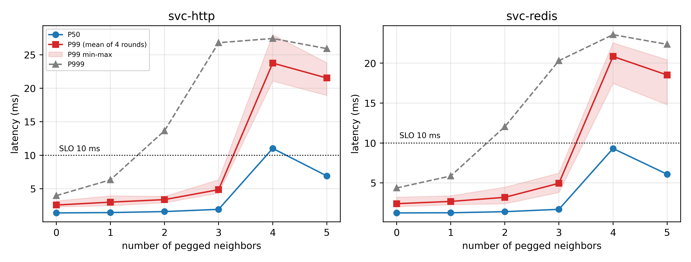
设置。 服务（HTTP、Redis 各一台 1 vCPU 轻量 VM）保持不变；逐级增加"满载邻居"客户（每台 1 vCPU 忙循环，占满一个逻辑核），从 0 到 5 台；每级以 100 req/s 各探测两个服务 20 秒；每级 10 秒稳态；五轮以随机顺序重复。
结果。 跨轮均值（毫秒）：
| 邻居数 | HTTP P50 | HTTP P99 | HTTP P999 | Redis P99 | 宿主忙率 |
|---|---|---|---|---|---|
| 0 | 1.39 | 2.57 | 4.0 | 2.40 | ~3% |
| 1 | 1.44 | 3.00 | 6.3 | 2.68 | ~42% |
| 2 | 1.59 | 3.38 | 13.7 | 3.19 | ~67% |
| 3 | 1.92 | 4.86 | 26.8 | 4.95 | ~86% |
| 4 | 11.0 | 23.8 | 27.4 | 20.8 | 100% |
| 5 | 6.9 | 21.5 | 25.9 | 18.5 | 100% |
观察。 （i）膝点稳定在 3→4 台之间：第 4 台满载邻居加入时，P50 从 1.9 ms 跳至 11.0 ms、P99 从 4.9 ms 跳至 23.8 ms，五轮范围窄。（ii）尾延迟预警早于中位数：P999 在 2–3 台时已显著抖动（14–27 ms），比 P50/P99 的坍塌早 1–2 档。（iii）4 台与 5 台之间 P50 呈非单调（11.0 vs 6.9），单看均值会把 5 台误判为"更好"。（iv）全程零超时：服务"表面仍然健康"，只看错误率或均值无法察觉坍塌。
解读。 当宿主的可运行线程集合持续超过逻辑核数（$C{=}4$，第 4 台满载客户加上服务与探针线程），服务的短请求开始为调度份额排队；坍塌是"瞬时并发跨过容量线"的事件，而不是"平均利用率达到某阈值"的事件（3 台时忙率已 86%，服务仍然健康）。这解释了为什么固定利用率阈值的容量经验（"到 80% 再说"）在本环境失灵，也为后文"管理瞬时性"的设计埋下伏笔。
边界。 单宿主、4 逻辑核；邻居为持续满载（最坏形态）；无任何配额或隔离；结论不直接外推其他核数，但"瞬时并发决定尾巴"的机制与 CPU 数量无关。
4.1b 复测：50 轮扩样（图 17）
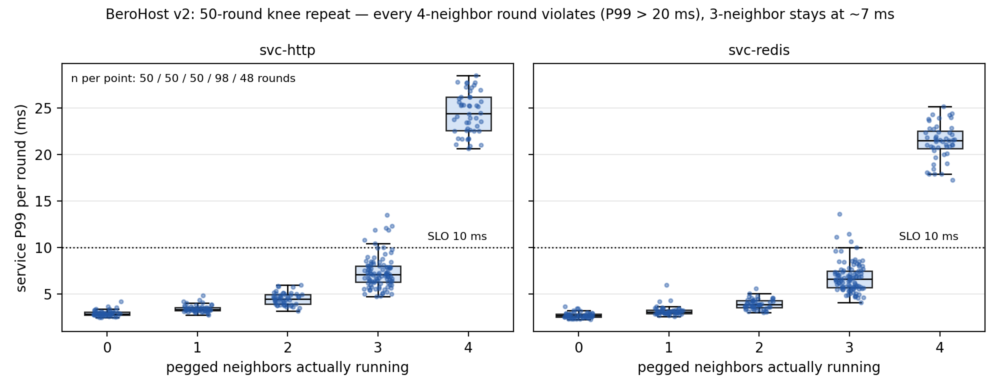
设置。 用自动化引擎把 4.1 的流程原样重跑 50 轮（v2 批次，随机顺序、级间稳态、每轮两次探测各 20 秒）。运行期间第 4 号满载邻居客户因宿主内存压力在第 2 轮被 OOM 杀死且未自愈——此后第 4 档（名义 4 台）实际只有 3 台在跑、第 5 档（名义 5 台）实际 4 台。因此按实际在跑的邻居数归并口径：3 台档 = L3 全部 50 轮 + L4 第 3 轮起 48 轮（n=98），4 台档 = L5 第 3 轮起 48 轮（n=48）。
结果（HTTP P99，毫秒；图 17 左侧）：
| 实际邻居数 | n | 均值 | 中位 | 范围 | >10 ms |
|---|---|---|---|---|---|
| 0 | 50 | 2.92 | 2.84 | 2.45–4.17 | 0 |
| 1 | 50 | 3.42 | 3.31 | 2.74–4.82 | 0 |
| 2 | 50 | 4.47 | 4.47 | 3.19–5.95 | 0 |
| 3 | 98 | 7.36 | 7.10 | 4.71–13.50 | 7（7%） |
| 4 | 48 | 24.44 | 24.42 | 20.66–28.48 | 48（100%，全部 >20 ms） |
Redis 同构（3 台 6.8 ms → 4 台 21.4 ms）。回看第 1 轮的 L4 档（当时第 4 台邻居仍在跑，恰为 4 台）= 22.99 ms，同样落在此档分布内。
观察。 （i）3→4 的断崖在 50 轮复测中逐轮复现：48/48 个 4 台档轮次 P99 ≥ 20.7 ms，98 个 3 台档轮次中 93 个 ≤ 12 ms——两档分布零交集（图 17 右侧散点可见）。（ii）绝对水平比首轮 5 轮实验（3 台 4.9、4 台 23.8 ms）略高（7.4/24.4 ms），均值排序与断崖位置不变；该漂移如实记录，可能与宿主长时运行后的状态（近 40 天在线、批次间缓存与碎片差异）有关。（iii）被判违反的阈值不敏感：3 台档即使把阈值放到 13.5 ms 也仅 7% 越线，而 4 台档最低值 20.7 ms——"第 4 台即坍塌"不是采样噪声或阈值选择问题。
边界与安全口径（重要）。 严格零违约口径下（要求全部窗口 P99 ≤ 10 ms），4 核床上真正无违约的最大档是 2 台（L2 全部 50 轮 ≤ 5.95 ms）；3 台档属于风险预算口径：98 个窗口中 7 个越线（ε≈7%），4 台档为 100%。因此本文严格区分三种叙述：拐点（均值断崖位置，3→4）、零违约容量（ε=0）与风险预算容量（给定 ε）。控制器 oracle 与容量声明一律使用带 ε 的口径（见 8.4 统一安全定义）；本批次的档位归并依赖运行日志重建（make_v2_figs.py），且基线状态与首轮批次不同（绝对水平漂移）。
4.2 同步突发（图 3、图 4）
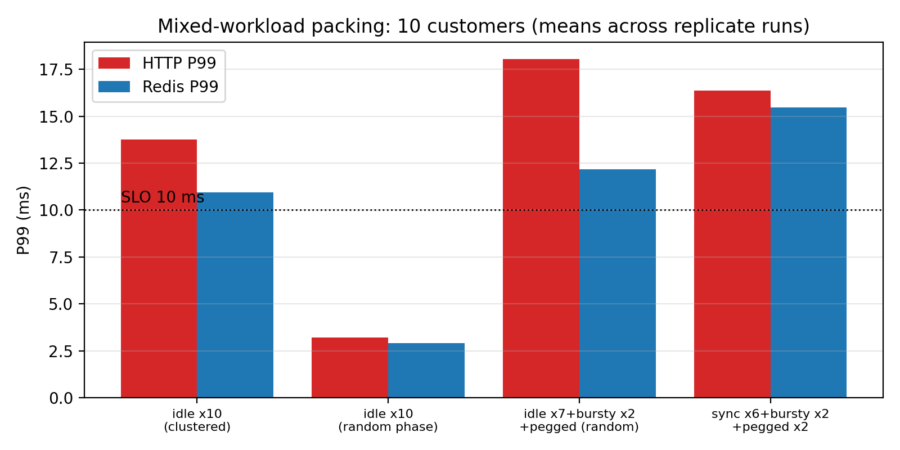
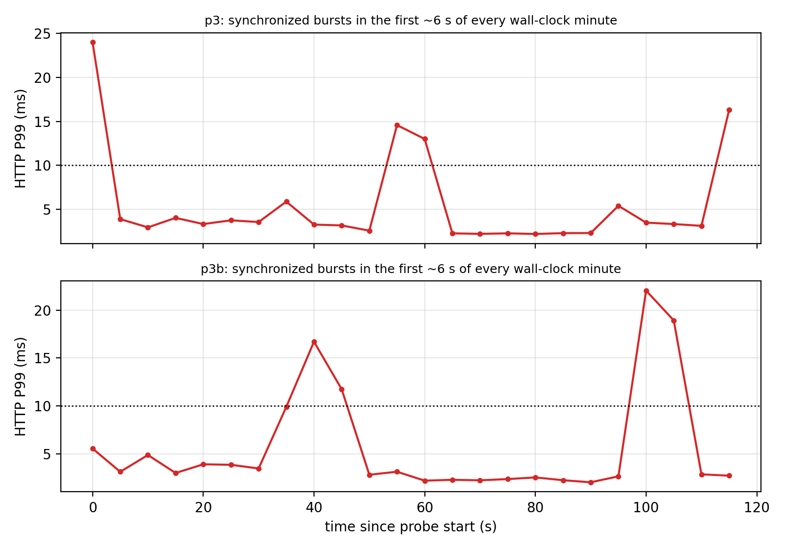
设置。 在"6 台定时同步（每分钟前 6 秒工作）+ 2 台阵发 + 2 台满载"的混合客群下，用 120 秒探针记录逐秒延迟；另设两组相位对照：10 台闲型客户"开机时间相近（相位聚集）"与"完全随机相位"（--randphase），以及"随机相位 + 1 台满载"的混合组。
结果。 （i）定时同步场景的时间线呈严格周期性（图 3）：
``安静段: P99 ≈ 2–3 ms突发窗: P50 升至 4–8 ms，P99 14–22 ms（最高 33 ms）突发结束: 回落至 2–3 ms；60 秒后重复``
四次复现（p3、p3b、p3c、p3d）：整体 P99 13.1–22.6 ms，全部违约。（ii）相位对照（图 4）：10 台闲型客户相位聚集时 P99 10.2–17.3 ms（违约）；完全随机相位时 2.7–3.8 ms（两轮均无违约）。（iii）随机相位下仅混入 1 台满载客户：P99 14.0–20.8 ms（四轮 p6/p6b/p6c/p6d，全部违约）。
解读。 "平均很闲"与"尾巴干净"是两回事：闲型客户群体在任意瞬间仍有非零概率同时醒来；同步（有意对齐或开机时刻的偶然聚集）把这个概率变成规律性事件。定时同步是最清晰的病态样本；而生产环境更接近"随机相位 + 少数常驻重负载"的混合——第三节的膝点与这里的满载混合共同说明：一台持续满载客户加上随机重叠，就足以击穿严格 SLO。这为"短历史/冷启动"问题提供动机：新客户到达时无法知道它是长期轻闲型还是持续满载型。
边界。 对齐突发是人为构造；相位聚集由同时开机造成（真实生产中新客户开机时间天然分散）；负载均为合成的忙循环/占空比模式，非真实业务。
4.3 需求截断：用量会骗人（图 5）
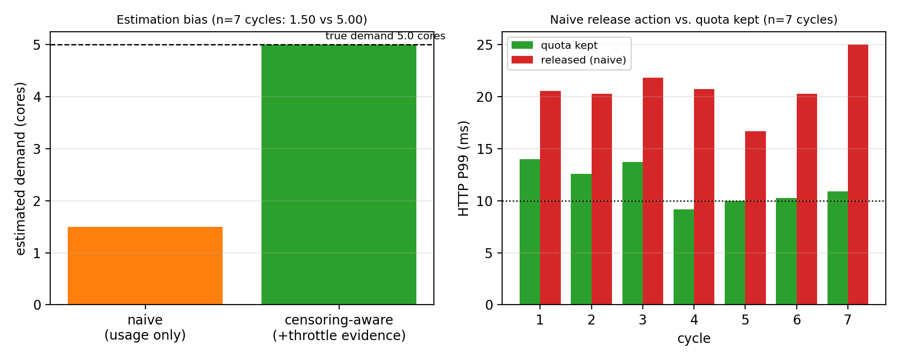
设置。 5 台客户均为满载（真实需求各 1.0 核），每台以 cpu.max = 30000/100000（平均 30%）限速。分两阶段测量：限速态（配额生效）与松绑态（模拟"信用量面板、认为有余量"的运营决策，撤掉配额）。共 7 轮（c3 三轮、c4 两轮、c5 两轮），每阶段以 100 req/s 各探测两个服务 30 秒，并读取逐 VM 的 cpu.stat 差值。
结果。 （i）估计：限速态下 5 台合计可观测用量 1.50 核（每台 0.30），而节流证据（nr_throttled 每 63 秒增长约 440–450 次、节流时长占比约 0.3–0.7）揭示真实需求为 5.00 核——低估 3.3 倍，7/7 轮一致。（ii）服务侧（毫秒）：
| 阶段 | HTTP P99（7 轮范围） | Redis P99 | 宿主忙率 |
|---|---|---|---|
| 限速态 | 9.2 – 14.0 | 8.8 – 13.8 | ~57% |
| 松绑态 | 16.7 – 25.0 | 15.0 – 20.9 | 100% |
松绑后各客户速率约 27–32 M it/s（约为满载基准的一半），宿主瞬时饱和，服务 P99 7/7 轮违约，且比限速态进一步恶化 5–10 ms。（iii）限速态自身也并非"温和"：配额把连续负载切成脉冲，服务 P99 在 SLO 线附近波动（9–14 ms），有时越线。
解读。 截断有两个叠加后果。其一是估计偏差：用量面板显示"还有 2.5 核余量"，真实状态是已经超载 25%；基于它的松绑/扩卖决策会把隐藏缺口变成公开事故。其二是脉冲税：配额在保护均值的同时制造周期性突发，本身就在伤害尾延迟（与 4.4 的配额对照一致）。censoring-aware 的估计（截断证据 + 节流比例 → 有假设的点估计 $u/(1-t)$；其精确条件与反例见 3.3.1，7.3c 节验证误差 ≤9%）得到 5.00 核，正确报告"无余量、需容量动作"，避免了松绑决策。
边界。 单一配额水平（30%）；客户负载为满载忙循环；限速态的 SLO 命中情况在 SLO 线附近波动，应理解为"这台宿主已处于过载边界"，正确的后续动作（迁移/升配/拒接）超出本文的在线决策范围。
4.3b 复测：90 个 cycle 扩样（图 18）
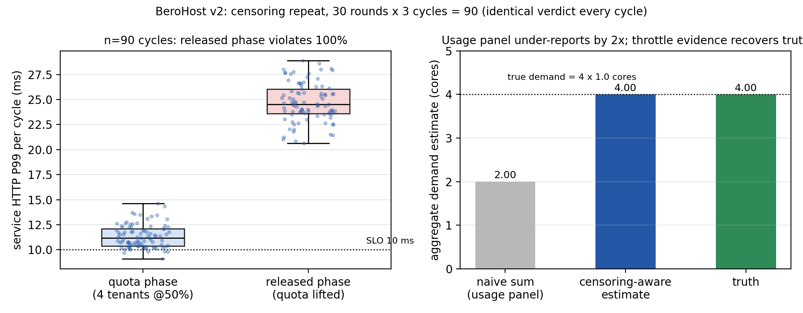
设置。 v2 批次把 4.3 流程自动化重跑 30 轮 × 3 cycle = 90 个 cycle（配额口径 50%、4 台客户在跑——第 4 台客户在批次早期因宿主内存压力离线；客户仍为满载真实需求各 1.0 核）。每 cycle 限速态/松绑态各探 30 秒。统计口径：90 个 cycle 全部计入，但同一轮内 3 个 cycle 时间相关——轮级不确定性按轮聚类计算（不是把 cycle 当独立重复）；90 个离线窗口（每 cycle 一台）与在线 360 个窗口分开报告；离线窗口的节流证据为空、估计记零，属"客户离线"事件而非"无截断"。
结果（图 18）。（i）估计：90/90 个 cycle 中，用量面板口径 2.00 核（4 × 0.50）而节流证据校正后 4.00 核——与真值 4.0 核完全一致；即"限速一半 → 少报一半"，逐 cycle 无一例外。（ii）服务侧：限速态 HTTP P99 均值 11.4 ms（范围 9.1–14.6，98% 的 cycle 已越 10 ms 线）；松绑态均值 24.7 ms（范围 20.6–28.9），90/90（100%）违约，且 90 个 cycle 的最低值（20.6 ms）仍高于限速态 95% 分位。
读法。 与首轮 7 cycle 实验（5 台 @30%，naive 1.50 vs aware 5.00）方向一致、结论更硬：截断造成的低估倍数恰等于配额比例（本例 2×），节流证据把它精确复原；而"基于少报的松绑决策"在 30 个独立轮（90 个时间相关 cycle，按轮聚类）中 100% 把服务推出 SLO。两组参数（30%/5 台与 50%/4 台）叠加，说明该失效与具体配额水平无关。
边界。 同 4.3；本批次 4 台客户口径（一台离线）。
4.4 控制手段的可靠性（图 6–9）
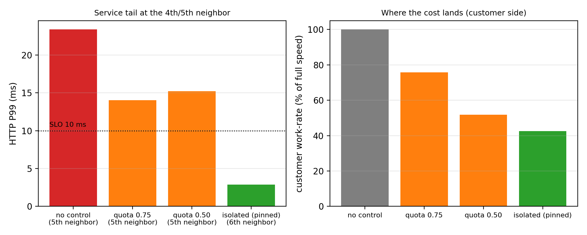
本节把"保护服务尾延迟"的希望逐一押在五种手段上：CPU 配额、CPU 权重、绑核隔离、内存双闸、IO 限速（附 IO 权重反例）。
4.4.1 CPU 配额：约束均值，不增加安全席位（图 6）
把新客户分别限到 0.75 核与 0.5 核后重跑邻居扫描：两者的安全膝点仍是 3 台——第 4 台（无论限到 0.75/0.5）加入时服务 P99 分别 14.0/11.2 与 15.2/11.3 ms，全部违约；代价却是实打实的客户速率下降（约 72–78% 与 48–53%）。配额脉冲对照（qp1）：把周期从 100 ms 拉长到 1 s 无改善（P99 12.0 ms）；"错峰周期"（100–300 ms 混合）略好（10.7 ms）但仍不达标。结论：给新客户限速换不来更多安全席位，只会降低客户速率并加剧尾延迟。
4.4.2 CPU 权重：即使百倍优先级也不护尾（图 9）
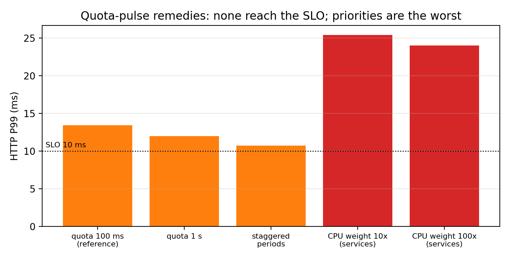
把服务 VM 的 cpu.weight 提高到 1000、复核轮提高到 10000（对客户默认 100 的 10×/100×），在 5 台满载客户下服务 P99 分别为 25.4/22.8 与 24.0/22.7 ms——比不加权（历史 5 台满载 21.6/19.5 ms）还差，与"权重应优先照顾服务"的直觉相反。IO 权重（io.weight 50 vs 500）在本床的调度器配置（none/mq-deadline）下同样无效果——注意这只否定所测配置下的权重路径，不否定内核的 io.cost（iocost 权重分配）与 io.latency（独立时延保护机制），二者本文均未启用评测（见 4.4.5 与 5.2 的边界）。结论（限定条件下）：在本床的调度器与负载组合中，软优先级不是尾延迟保护手段；可靠的是隔离。
4.4.3 绑核隔离：本测试床全部风暴中唯一幸存的保护手段（图 6、10）
把服务+探针绑到核 0–1、客户绑到核 2–3 后，1–5 台满载邻居全程零违约（P99 2.9–3.2 ms）；客户按预期分享剩余两核（第 5 台时每台约 44% 满载速率）。三重风暴综合验证（4.5 节）四次复现该结论。代价被明确转移到"经济版"客户侧：被隔离保护的服务不再参与竞争。
4.4.4 内存：双闸止血（图 7）
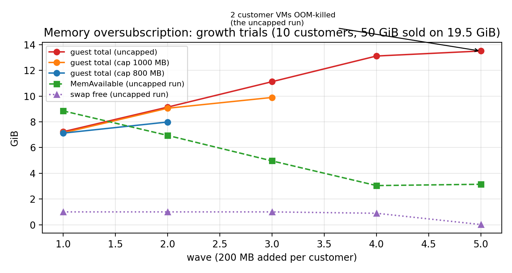
无限制增长实验（10 台客户 ballast 渐进占用）：客户合计约 13.8 GB 时宿主 1 GB swap 耗尽，2 台客户 VM 被 OOM 杀死、多台客户 SSH 无响应；服务因占用小反而无恙。加 memory.high（1000/800 MB）后零死亡、宿主稳定，但被限客户触发的回收几乎全部落在匿名页换出上——小 swap 被迅速耗尽并成为全局瓶颈，客户经历短暂无响应。把 memory.swap.max 一并设为 0（双闸）后，超用被原地节流、不再消耗宿主 swap。另注意：关闭 balloon 时，客户"碰过"的内存直到 VM 重启才归还宿主——动态归还与"不压缩"之间存在明确取舍。
4.4.5 块 IO：硬限速有效，代价在肇事方（图 8）
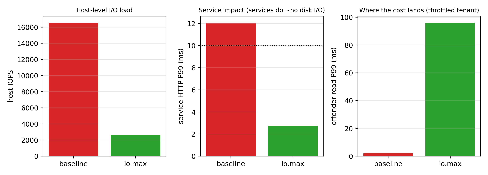
10 台客户同时跑 4K 随机读写（70/30，O_DIRECT）时，宿主被推到约 16.5k IOPS，服务 P99 被连累至 12.1 ms（违约）——尽管服务几乎不碰磁盘（IO 风暴经宿主全局路径波及服务）。给每台客户 io.max = 300 riops/150 wiops 后实测精准生效，宿主降至 2.6k IOPS，服务 P99 回到 2.7 ms；代价是被限客户的读完成 P99 升至约 96 ms（排队在被限方）。两个操作细节：cgroup 的 IO 记账口径落在整盘设备（8:0）而非分区；本床调度器为 none/mq-deadline，io.weight 在所测路径下无效（io.cost/io.latency 不在本文评测范围，见 5.2 边界）。
本节边界。 服务为轻量 VM（CPU 上占核少）是"绑核隔离"成立的前提；权重失效的机制解释（宿主收包路径/调度信用动态）留待后续深挖；内存数字与 1 GB swap 环境绑定。
本稿待办
- 图 2/3/5/6/7/8/9/17/18 的出图脚本（数据齐、口径已核对，按骨架 §5 清单生成；v2 图由
make_v2_figs.py一键复现）。 - 【待补实验】控制手段对照的重复轮次 ≥5；权重失效的机制验证；冷启动专项。
- 【v2 返工中】第 4/5 档因邻居 VM 死亡被重新归并的原始档位（v3knee 50 轮，五台邻居全程在线）正在批次尾部自动重跑；censoring 的 5 台 @30% 同口径复测（v3cen 30 轮）同步排队。
5 设计：风险校准准入与塑形手册
本章把第 4 章的测量结论组织成小型服务商可执行的决策框架。设计原则只有两条：（i）绝不依赖被测量证伪的机制（软优先级、平均利用率、未校正的用量）；（ii）把"保保护"与"做生意"分层——服务的 SLO 用隔离守护，客户的密度用证据换。
5.1 总览
框架分两层，对应运营中的两类动作：
- 塑形（Shaping）：决定每个已被接纳的客户"以什么形态竞争资源"。塑形定义了宿主的保护包络——哪些资源在什么条件下被守住、守住到什么程度。第 4 章的结论凝练为一句：隔离优先、硬限速次之、软优先级不采信。
- 准入（Admission）：决定新到达的客户"能不能进来"。准入在塑形给定的保护包络下，用经过截断校正的需求证据估计余量并做出 allow/defer 及理由。
两层共用一组监测器（服务尾延迟、宿主压力、逐 VM 截断/限流证据、数据质量），监测器同时充当准入的"暂停开关"。
5.2 塑形手册
CPU。 第一步、也是在本测试床全部风暴中被验证有效的唯一一步：为敏感业务划出专属核。把服务与探针线程绑定到 $c_{\text{svc}}$ 个逻辑核（本测试床取 2），客户 VM 绑定到其余核上竞争（taskset/cpuset；PVE 下可直接对 qemu 进程 taskset -apc）。服务占核越轻，这一步代价越小。第二步（可选）：对客户加 cpu.max 配额——注意其角色是商业分层与成本控制（谁买多少档），而不是"多接客户"的手段：实验证明配额不改变安全膝点（第 4.4.1 节），只改变客户自己的速率。不使用 cpu.weight 作为保护手段（第 4.4.2 节：百倍权重也不护尾）。监测器：服务 P99/P999 与调度等待（可用时）。
内存。 双闸 + 预留：对每台客户设置 memory.high（热内存预算，保证 $\sum \text{high} \le M_{\text{hot}}$，$M_{\text{hot}}$ 取物理内存扣减宿主与业务预留后的值）与 memory.swap.max = 0（禁止超用客户消耗宿主换出空间）。宿主 swap 留给业务侧或直接关闭——第 4.4.4 节证明 swap 是"回收税"的放大器：让 swap 上限不设时，被限客户的回收会把小 swap 耗尽并成为全局瓶颈；双闸把超用变成"原地节流"。若产品承诺"不压缩"，还需在售卖口径上明确：关闭 balloon 时客户"碰过"的内存不会归还宿主（动态归还与不压缩二选一），热内存预算即真实可交付内存。
块 IO。 对每台客户设 io.max（按售卖的档位给 riops/wiops 或带宽），这是本文评测范围内对 IO 风暴唯一实测有效的止血：宿主 IOPS 与业务延迟立刻回稳，代价落在被限客户自己的排队延迟上（第 4.4.5 节）。实现注意两点：cgroup 记账以整盘设备号为准（分区号可能无效）；本床的宿主 IO 调度器为 none/mq-deadline，io.weight 未产生可测效果。边界（避免机制混淆）：io.weight 的权重分配另有 io.cost（iocost）路径，其不依赖 IO 调度器；io.latency 是独立的时延保护机制（保护目标租户而非限制造事者）[18]。本床未启用评测 iocost 与 io.latency，本文结论只覆盖所测路径与配置。
保护包络的表述。 "卖 16 vCPU / 48 GiB / 400 GiB"是名义售卖包络；保护包络是：服务侧 $c_{\text{svc}}$ 个专属核上的 SLO 承诺 + 客户侧每台 $\text{high}$ 的保真内存 + 每台 io 上限的 IO 能力。两者之差就是"经济版"的产品空间——分层定价的依据。
5.3 风险校准准入
输入（决策时可见）。 逐 VM 历史（用量序列）；截断证据（nr_throttled/throttled_usec 增量）；同类配置的历史队列（先验）；宿主状态（忙率、压力信号、服务尾延迟监测器的最近整窗）；到达批次的规模。
需求估计（经验截断校正）。 对每台已接入客户：若截断证据为真，用节流时间占比 $t_i$（$\Delta$throttled_usec / 窗口时长）计算 $\hat d_i=\min(\text{vCPU},\; u_i/(1-t_i))$——经验估计器：连续满载场景近似无偏（7.3c 节 ≤9%），阵发过估、间歇可能低估，假设与边界见 3.3 节；"至少满 vCPU"作为兜底。若截断证据缺失，采用窗口化历史分位数（逐窗 $u/(1-t)$ 的 P95）。可选的错峰松弛探针（限时 2 秒放开配额直接观测需求样本，逐台错开、代价有界）作为直接测量通道。对新到达客户（$T_{\text{hist}}=0$）：使用同类配置客户的截断校正估计作为先验；当同类样本不足时退化为"满 vCPU"——即把冷启动风险先算成最坏情形，观察窗口内再逐级放宽。
决策规则（时间对齐聚合）。 维护 1 秒分辨率的逐 VM 历史；对已接入集合按墙钟相位剖面（各 VM 每秒位的需求上包络）预测未来决策跨度的聚合需求峰，并以实测聚合需求的分位数作为背景预留。候选客户的计账口径要区分尺度：配额只约束一秒钟尺度的平均消耗，不约束亚秒突发——周期 $P$ 内客户可以先全速燃烧其预算（例：50% @ 100 ms 前 50 ms 满速），这正是 4.4.1 实测的"配额脉冲税"。因此：(i) 容量计账用 $\min(\text{1 秒峰值},\ \text{配额})$ 作为一秒尺度上限；(ii) 尾延迟保护不依赖配额（服务 SLO 是毫秒级，必须在相位剖面上按实测突发结构计账，或对该客户做错峰安排）；(iii) 对无历史的新候选，用同类客户的突发先验并保守起步、观察窗内逐级放宽。预留 + 候选上限 $\le$ 客户侧有效容量（$\times$ 利用预算）时放行；批量到达先做容量预留，同一份空闲不得重复允诺。
校准与暂停。 安全余量在独立验证窗口上按"实测违约预算"标定（经验校准，报告实测覆盖而非分布无关保证）。以下信号触发暂停新准入（带滞回恢复）：服务尾延迟监测窗越线；客户侧金丝雀（唤醒停顿/速率）越线；估计不确定性过大（历史过短/区间过宽）；数据质量事件（缺失、计数器重置、刷新周期变化）；漂移（分布变化、新配置类型到达）；宿主压力信号持续越线。恢复需要连续稳定窗口，阈值只在训练/验证集合上确定。
决策跨度。 默认 5 分钟，敏感档 1/15 分钟；该跨度只是控制器刷新节奏，不构成任何长期服务承诺。
5.3.1 准入算法：伪代码与参数（评审要求的可实现规格）
``算法 A（风险校准准入；到达事件或每 Δ 分钟触发）输入: 已接入集合 S（逐秒需求史 h_s、截断证据 u_s/t_s/q_s）、容量 C、利用预算 u1 对每台 s ∈ S:d_s ← u_s / (1 − t_s) # 节流时点估计（=运行段均值，3.3.1 命题 1）if 无截断证据: d_s ← u_sif 持续节流证据（连续窗口均被限流）: d_s ← max(d_s, q_s · (1 + t_s)) # 经验保守启发（非认证）：可能高估→更保守；认证条件见 3.3.1p_s[0..59] ← 逐秒位需求上包络（最近 120 s，1 s 分辨率）2 peak ← max_b Σ_s p_s[b] # 相位剖面预测的聚合峰（已接入集合）bg ← Q95(残差)：Q95(最近 10 min 实测聚合需求 − 同期剖面预测) # 残差预留，避免与 peak 重复计账3 cand ← Σ_{c∈B} min(一秒峰值先验_c, q_c) # 候选按一秒尺度上限计账（配额 ≠ 瞬时峰值）4 if peak + bg + cand ≤ u · C: allow（并记录预留）else: defer（附命中项：peak/bg/cand 哪个越线）护栏（与主循环并行）:服务 P99 窗越线 ∨ 金丝雀唤醒停顿 > 250 ms ∨ 客户速率 P5 < 70%⇒ 暂停准入；连续 3 个稳定窗后滞回恢复校准协议: u 与滞回窗在一次性固定的独立验证集上选取（目标：验证集违约窗比例最小）；报告单侧 Clopper–Pearson 上界，并列出达到给定上界所需的独立试验数（零失效时，95% 上界 ≤10% 需 ≥29 次、≤1% 需 ≥299 次独立试验）——以"经验安全护栏"表述，不声称 1% 保证；参数上线后不再调整。``
记账尺度与残差风险（防低估论证）。 容量预留工作在1 秒尺度：需求上包络来自逐秒历史，配额对一秒均值成立，故 $\min(\text{1s 峰值},\ q)$ 不会低估秒级并发。但配额允许亚秒脉冲（周期内前段满速，4.4.1 实测），故 1 秒记账并不保证亚秒尾延迟——本文不让容量计账承担该责任：服务尾延迟由隔离 + 服务侧护栏（P99 窗/金丝雀暂停）兜底，暂停护栏的触发与容量放行解耦（护栏越线即刻关闸，与预测误差无关）。因此三者的证据链是：秒级竞争风险由剖面预测覆盖，亚秒风险由隔离与护栏覆盖，二者不叠加承诺。
参数表（默认值 → 依据）：Δ = 5 min（刷新节奏；敏感档 1 min）；u = 0.9（独立验证集标定）；历史窗 120 s（= 2 个 60 s 周期）；背景预留 = 剖面预测的残差 Q95（避免与 peak 重复计账）；金丝雀阈值 250 ms / 1 s（j1 实测停顿量级）；下界兜底 $q(1+t)$ 仅在持续节流证据的客户上启用（3.3.1 命题 2 的边界）。
5.3.2 安全声明的认证协议（统计口径）
目标。 对任一配置/负载族的"轮级违约率 ≤ ε"给出单侧 95% Clopper–Pearson 上界，并显式报告"达到该声明所需的最小独立轮数"。
零失效预算表（上界 $U(n) = 1-0.05^{1/n}$）：
| 独立轮数 n | 违约率上界 |
|---|---|
| 10 | 25.9% |
| 30 | 9.5% |
| 50 | 5.8% |
| 90 | 3.3% |
| 299 | 1.0% |
相关性修正。 轮间共享宿主状态（长时漂移、缓存、同批次 VM 状态）→ 独立假设只是乐观上界；协议要求 (i) 按时间块/轮聚类计算有效样本量，报告"有效轮数 < 名义轮数"；(ii) 以块级最坏窗口作敏感性分析；(iii) 任何"零违约"陈述必须附本轮数与上界。
序贯预算（本文采用）。 pilot 10 轮（粗筛）→ 30 轮（可声明 ≤10%）→ 90 轮（可声明 ≤3%）→ 300 轮（1%，仅限关键结论的长期计划）。本文映射：三风暴 28 轮（上界 10.1%，乐观独立假设下）；截断 90 cycle（3.3%）；膝点按轮聚类报告。不声称 1% 保证（299 轮超出当前预算，列为长期项）。工具：tools/certify.py（一键计算任意轮数与目标的上界/所需轮数）。
5.4 与朴素策略的差异（一句话各表）
| 策略 | 看不见什么 | 后果（实测） |
|---|---|---|
| 固定超售倍数 | 宿主与客户的一切状态 | 收满 5 台、4 个违约窗（第 7 章） |
| 平均利用率阈值 | 瞬时重叠、截断需求 | 相位聚集/同步时照常放行（第 4.1–4.2 节） |
| 历史分位（未校正） | 截断、同步 | 被限客户被当"很闲"（第 4.3 节） |
| 本设计 | —（显式管理瞬时性与截断；不确定即暂停） | 见第 7 章评估 |
5.5 实现诚实声明
- 本设计不含"分布无关的风险保证"；对任意漂移与对抗负载，只承诺监测与保守化行为；
- 需求估计器是经验估计器：其跨模式误差/覆盖率/最坏低估表征（5 种负载模式 × 3 档配额 × 3 种配额周期 × 多 vCPU，各 10 轮）为 v2 专项；本文只承诺目标负载族（连续满载为主）上的经验边界；
- 校准/暂停的消融与阈值敏感性：v2 以四路公平对决（naive / AUDIBLE 式 / aware / 时间对齐 taligned）×10 轮重测，并含内存闸门 800/1920 MB 对照；
- 塑形手册中的 CPU 配额仍是可选件——若产品不存在分层售卖需求，可以只保留"隔离 + 内存双闸 + IO 上限"。
6 实现与测试床
6.1 测试床
测试床是一台与小型服务商生产拓扑同构的嵌套宿主：PVE 8.4.21 [20]（Debian 12 基础）运行在 KVM 客户机内（systemd-detect-virt=kvm，/dev/kvm 与 vmx/svm 均可用），报告 4 vCPU（AMD EPYC 9575F）与 19.5 GiB 内存、单块 200 GB 虚拟磁盘（cgroup 记账设备 8:0）、1 GB swap。默认关闭 balloon [21]（内存归还与"不压缩"的取舍见 §4.4.4）。宿主空闲基线忙率约 2–4%；实验期间除被测组件外停用一切后台任务（本地 NIE-SLA 探针、各 VM 的 apt/man-db/fstrim 定时器）。隔离的边界：guest 内 4 个 vCPU 呈现为 4 个独立核（SMT 关闭），"服务核 0–1 / 客户核 2–3"在 vCPU 级不相交；但 guest vCPU 到 OVH 物理核的放置不受本文控制，本床不能证明物理核级隔离——物理核级隔离（SMT 兄弟核验 + NUMA 归属）以裸金属测试床为准（第 8 章 8.1）。
负载拓扑：服务 2 台（HTTP/nginx、Redis，各 1 vCPU/1 GiB）、探针 1 台、客户 16 台（1 vCPU、3072 MiB；早期部分实验为 1024/5120 MiB，见各节说明）。全部 VM 由统一的 Debian 12 cloud 模板克隆而来（cloud-init 注入网络与公钥），客户机内不安装任何常驻组件。
6.2 工具链（全部脚本随文提交）
| 脚本 | 用途 |
|---|---|
tools/probe.py | 开放环定速探针：记录每请求的计划/实际发送时间、连接与总延迟、超时与错误；输出 JSON 摘要 + 原始 CSV |
tools/burner.py | 客户负载：占空比/周期/相位（随机、墙钟对齐）可编程忙循环，输出"速率+状态"到本地文件 |
tools/ballast.py | 内存渐进取用（步长/间隔/目标可配），记录驻留量 |
tools/sweep.sh | 邻居数扫描（每档 0–5 台、随机顺序、宿主忙率与双服务探测） |
tools/analyze_curve.py / analyze_packing.py / analyze_admission.py / analyze_shaping.py | 各实验的汇总与时间线分析 |
tools/admission_pilot.py | 准入策略闭环（到达序列、决策、执行、窗口实测） |
tools/shaping_pilot.py / shaping_host.py | 塑形对照（配额/绑核/权重；宿主端直连版用于高负载下的稳健执行） |
tools/packing_host.py | 混合客群打包（客户类型/相位组合） |
tools/mem_phase_host.py | 内存球压（wave 增长、守卫、memory.high/swap.max 双闸） |
tools/disk_phase_host.py | 磁盘风暴（fio 4K 随机读写、io.max/io.weight） |
tools/quota_pulse_host.py | 配额脉冲对照（周期/错峰/权重） |
tools/censor_phase_host.py | 需求截断实验（限速态/松绑态、cpu.stat 证据） |
tools/synthesis_host.py | 三重风暴综合验证（syn1–syn4 共四次，完整保护包络） |
tools/stall.py | 客户内唤醒停顿监测（金丝雀 QoS 代理） |
tools/method_eval_host.py | 准入策略消融（naive / AUDIBLE 式 MC / aware / aware+校准） |
tools/coldstart_host.py | 冷启动专项（全重、全轻到达 × 三种新客先验） |
tools/bounds_host.py | 需求恢复界实验（配额×占空比网格、抬限真值对照） |
tools/joint_host.py | 准入＋塑形联合验证（保护包络 + 到达序列 + 金丝雀停顿） |
控制面操作全部通过 cgroup v2 原语完成：cpu.max/cpu.weight、memory.high/memory.swap.max、io.max/io.weight（对 qemu.slice/<vmid>.scope），绑核通过 taskset -apc 作用于 qemu 进程全部线程；宿主侧忙率与内存取自 /proc/stat、/proc/meminfo，逐 VM 服务量与截断证据取自各 scope 的 cpu.stat（usage_usec、nr_throttled、throttled_usec）。
6.3 生产遥测的只读采集
两台真实生产宿主仅做匿名只读遥测：经 PVE 只读接口（pvesh get /nodes、/nodes/{node}/status、/cluster/resources）与 /proc 读取 CPU 服务量、限流计数、压力信号、内存与生命周期事件，60 秒粒度、目标 7 天；远端进程在内存中对 VM/节点 ID 做 HMAC 匿名化，不采集 VM 名、IP、业务内容与磁盘数据；不安装组件、不更改客户配额、不做任何压力测试。凭证以一次性口令完成密钥交换后弃用，密钥仅存于研究者工作站。
6.4 可复现性
测试床脚本、全部原始数据（截至 2026-10-12：335 个逐请求原始文件、44 个 JSONL、汇总脚本；v2 海量复测数据在测试床归档待回传）与实验协议已随文存档；数据字典（字段、单位、口径、质量标记）与执行日志（含每次环境改动与异常）一并提交。所有"违约"判定使用事前固定的 SLO 与窗口定义；被拒绝的候选负载不启动，评测输入保留其计划需求，不存在按结果挑选运行的事后筛选。
7 评估
本章汇总三类评估：（A）准入策略对照；（B）塑形与保护包络对照；（C）三重风暴综合验证。另附生产遥测的使用现状与明确的缺口清单。统一 SLO：服务 P99 ≤ 10 ms。
6.1 设置回顾
测试床与指标见第 3/4 章与第 6 章。准入对照采用"5 个候选客户逐个到达、策略依据当时可见证据决策 allow/defer、允许后实测窗口"的闭环协议；塑形对照采用逐级扫描（0–5 台邻居）+ 综合风暴；每项关键结论至少两轮复现（膝点 5 轮、Censoring 7 轮、综合验证 4 次）。
6.2 准入策略对照（图 4 配套表）
四种策略在同一到达序列与同一证据面下运行（两轮不同顺序）：
| 策略 | 依据 | 接入数（轮 A / 轮 B） | 违约窗 | 最差 P99（HTTP/Redis） |
|---|---|---|---|---|
| 固定倍数（R=2.0×） | 仅配置口径 | 5 / 5 | 4 / 4 | 23.7 / 25.8 |
| 忙率阈值（80%） | 宿主忙率 | 3 / 3 | 0 / 0 | 7.8 / 5.7 |
| 历史需求预算 | 逐 VM 用量分位 + 预算 | 3 / 3 | 0 / 0 | 6.1 / 4.8 |
| 校准+尾暂停（候选） | 需求预算 + 单窗 P999 暂停 | 3 / 2 | 0 / 0 | 4.3 / 3.3 |
读法。 固定倍数不看任何状态、径直越过膝点（第 4 章），4 个违约窗是最好的反例；三种"看状态"的策略都在膝点（3 台）停下且零违约——说明膝点可由证据触达。候选策略更保守但暴露了一个实现问题：单窗 P999 抽样噪声大（n≈2），B 轮被一次 16.3 ms 尖峰误触发而少接 1 台。这正是"暂停机制需要平滑/滞回/更长窗口"的直接证据（已列入改进项）。预实验的公平性说明：策略全部只使用"决策时可见"的信息；每台的允许与否都真实执行（未接入的候选不启动负载），不存在"事后挑最优"。
6.3 截断校正决策（核心主张的直接对照）
第 4.3 节的场景升级为决策对照（7 轮）：同一状态（5 台客户、各限 30%、真实需求 5.0 核），两种决策：
| 决策 | 依据 | 动作 | 结果 |
|---|---|---|---|
| 信用量（naive） | 1.50 核占用、"余量 2.5 核" | 松绑（认为释放限制是"优化"） | P99 16.7–25.0 ms，7/7 轮违约 |
| Censoring-aware | 节流证据 → ≥5.00 核 | 拒绝松绑；报告"无余量、需容量动作" | 不引入新增负载；限速态维持（P99 9–14 ms，处于 SLO 线附近） |
读法。 两组决策使用同一份数据、只是估计方式不同：naive 把被截断的用量当需求，得出"还有一半空间"的幻觉；aware 用节流证据把需求下界钉在配额以上。前者的动作把宿主推入瞬时饱和（客户 27–32 M it/s、宿主 100%），后者避免了这个自伤动作，并给出正确的容量信号。限速态本身贴近 SLO 线这一细节如实保留：该宿主已处于过载边界，上限动作（迁移/升配）超出本文范围。
7.3b 方法消融与冷启动（预实验，图 11）
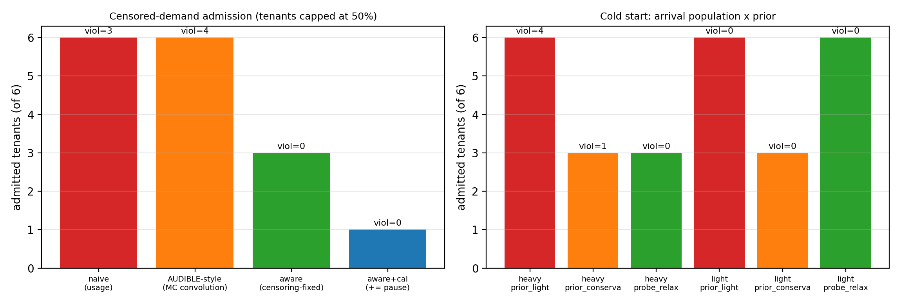
消融（截断场景）：六个客户逐个到达、到达即限速 50%，四种估计/决策正面对撞：
| 策略 | 接入（共 6） | 违约窗 | 备注 |
|---|---|---|---|
| naive（按用量） | 6 | 3 | 第 4 台起 P99 17.8/15.6/20.7 ms |
| AUDIBLE 式（MC 卷积，未校正） | 6 | 4 | 同样只看“被 50% 截断后的用量”，第 3 台起即见 10.5 ms |
| censoring-aware（本方法） | 3 | 0 | 恰在膝点停手（9.8 ms 贴线未越） |
| aware+校准+尾暂停 | 1 | 0 | 单窗 P999=12.2 误触发且未恢复——再次印证“暂停需要平滑/滞回” |
冷启动（无历史新客户）：两类到达人群 × 三种先验：
| 先验 | 全满载到达 | 全空闲到达 |
|---|---|---|
| 乐观（新客户按 0.2 核） | 6 台接入，4 个违约窗（11.7–17.2 ms） | 6 台，0 违约（但赌错即翻车） |
| 保守（按配置计账 1.0 核） | 3 台接入，1 个违约窗（贴线） | 只接入 3 台，丢 3 个席位 |
| 探测放宽（保守起步 + 观察后放宽） | 3 台，0 违约 | 6 台，0 违约——安全与席位兼得 |
读数：乐观先验在满载人群里必翻车；静态保守先验安全但损失一半席位；“先保守、观察后放宽”同时拿下两边。两表共同支撑第 5 章的设计原则：先验由证据决定，且必须有代价意识。
7.3c 截断校正估计器的经验验证（b2，图 12）
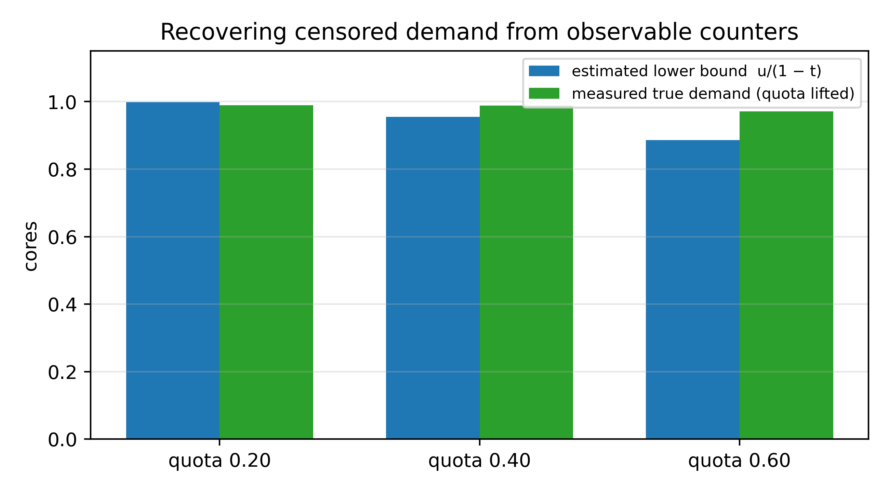
五个满载客户分别在配额 20%/40%/60% 下测量：由可观测的"配额 + 节流时间占比 $t$"计算 $\hat d = \min(1,\; u/(1-t))$；随后逐台临时放开配额（其余保持受限）测得真值，避免五台互抢污染真值：
| 配额 | 平均 $t$ | 估计 $\hat d$ | 真值 | 误差 |
|---|---|---|---|---|
| 0.20 | 0.80 | 0.998 | 0.989 | +0.9% |
| 0.40 | 0.58 | 0.955 | 0.988 | −3.3% |
| 0.60 | 0.32 | 0.886 | 0.971 | −8.6% |
读法（经验边界）。 本表验证的是估计器在连续满载族上的表现：宿主侧 counters（配额 + 节流计数）把它恢复到误差 ≤9%。但这不是一般性保证：同一组 counters 对阵发负载会显著过估（反例已进单元测试：真值 0.3 核、配额 0.2 → 估计 1.0），对间歇饱和可能低估；"方向保守"只在连续满载族成立。因此本文将其定位为经验截断校正估计器（假设与边界见 3.3 节），跨模式误差/覆盖率/最坏低估表征（5 模式 × 3 配额 × 3 周期 × 多 vCPU）为 v2 专项；估计器已并入设计（5.3 节）。
6.4 塑形对照：安全打包上限与代价（图 6）
在同一膝点协议下比较四种塑形（服务侧 SLO 口径相同）：
| 塑形 | 安全上限（实测） | 第 4 台起是否违约 | 客户速率（相对满载） |
|---|---|---|---|
| 无控制 | 3 台 | 违约（22.7/20.7 ms） | 100% |
| 配额 0.75 核 | 3 台 | 违约（14.0/11.2 ms） | ~72–78% |
| 配额 0.50 核 | 3 台 | 违约（15.2/11.3 ms） | ~48–53% |
| 绑核隔离 | ≥5 台（测到 5） | 1–5 台全程零违约（P99 2.9–3.2 ms） | 分享剩余核（L5 约 44%） |
读法。 只有隔离把"安全上限"从 3 抬高（到 ≥5）；配额改变的是客户的速率而不是上限（第 4.4.1 节），位置互换很直观：隔离把代价从"服务 SLO"挪到"经济版客户"，配额则两头受损。附加防线：内存双闸与 IO 上限分别在第 4.4.4/4.4.5 节证明其对各自风暴的止血作用——它们不抬 CPU 膝点，但防止另两类风暴把服务一并拖入违约（综合验证的必要件）。
7.4b 在线准入对决（图 20，v2 运行中）
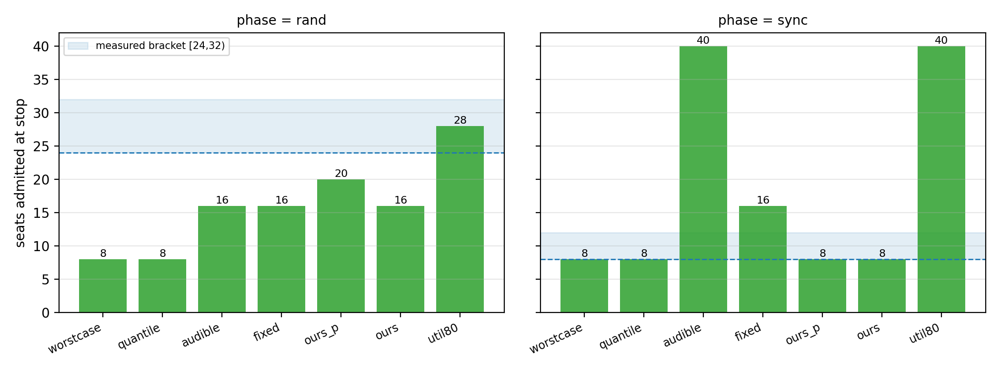
协议。 在 8 核租户池上，7 个策略（worstcase 配额保守 / fixed 固定 2× / util80 80% 忙率 / quantile 历史分位 / audible 式 MC 卷积 / ours 相位剖面 / ours_p 相位剖面+暂停护栏）× 2 种相位（随机 / 对齐），使用统一到达流（每步 +2 台、25 s 稳定、15 s 双服务探针）与统一可用证据（同一套 cgroup 计数与历史）；客户负载 20%/60 s 占空比。质量口径为 §8.4 主口径（服务 P99 ≤ 10 ms 且客户速率 P5 ≥ 70%）；容量参照取同口径已验证阶梯档位（随机 24 台 / 对齐 8 台；真实断点由细扫钉定）。指标：停止席位、首次违背档位、安全 VM-hours（首次违背前 $\sum n_i \Delta t_i$）、以及相对 oracle 的差距。
v1 初步（10 局，旧采样口径，如实标注）。 fixed 停 16、quantile 停 8、util80 无止损（冲到实验帽 40；50% 地板口径下 n=30 起出现慢客户）、audible 在对齐场景放开至 40（独立性假设抹掉相位相关性——正是其已知失效模式）；修复后的 ours 在对齐场景停在 8 台 = oracle（剖面峰值计数 0→2.01→4.02→6.01，第 10 台预判 8.4>7.2 而拒绝）。v1 的随机相位前 4 局为旧格式（无逐客户速率），故本节结论以对齐场景与决策轨迹为主。
v2 完整 14 局（图 20；评审点名要求的核心对照）。 统一到达流、统一证据、主口径（服务 P99 ≤ 10 ms 且客户 P5 ≥ 70%）；停点表（✅=全程未违主口径；⚠=停点越线后继续/未止损）：
| 策略 | rand 停点 | sync 停点 | sync 违约证据 |
|---|---|---|---|
| worstcase（配额保守） | 8 ✅ | 8 ✅（服务侧；客户 p5 待 show5） | —（等价于只认 vCPU 上限） |
| quantile（历史分位） | 8 ✅ | 8 ✅（服务侧；客户 p5 待 show5） | —（同上级保守） |
| fixed（固定 2×） | 16 ✅ | 16 ⚠（服务✅；客户 p5 待 show5 补测） | 断档 [8,12) 之外；旁证：sell_sync L16 p5=49–50% |
| audible 式（MC 卷积） | 16 ✅ | 40（冲帽）⚠ | 独立假设抹掉相位相关；n=18 起客户 P5=16% |
| ours（PPC） | 16 ✅ | 8 ✅（服务侧；客户 p5 待 show5 补测） | 停在已验证档位 |
| ours_p（+暂停护栏） | 20 ✅ | 8 ✅（服务侧；客户 p5 待 show5） | 同上 |
| util80（忙率阈值） | 28 ✅（p5=78%） | 40（冲帽）⚠ | n=18 起 P5=16%；同策略跨相位行为两极 |
观测轴归因（§3.6 命题的实测对照）：
| 策略 | 缺失的观测能力 | 实测失效 |
|---|---|---|
| naive / 配额缩放（§7.3） | ① 截断识别 | 90/90 松绑违约；低估 2–3× |
| audible 式 | ② 相位分辨（iid 卷积） | 同步相位卖 40（P5=16%） |
| util80 | ③ 时间分辨（单点忙率） | 同配置停点 28↔40 漂移；同步卖 40 |
| worstcase | ①②③（全保守） | 永远 8（rand 白让 2–3×） |
| ours / ours_p | —（三者齐备） | 唯一双相位安全（8/8；rand 16–20） |
三条结论。 （i）相位感知控制器（PPC）是唯一在对齐相位对齐容量断档的策略（ours/ours_p 均停 8：剖面峰值计数 6.0+0.4 ≤ 7.2，第 10 台预判越线即拒），同时在随机相位保持有竞争力的 16–20 台；（ii）平均利用率类判据的相位依赖性被直接量化：util80 随机卖 28（安全）而同步卖 40（客户 P5 崩到 16%）——同一策略、同一硬件，仅相位不同，风险两极；audible 式同样在同步崩（依赖独立性的卷积模型盲区）；（iii）fixed 与 worstcase/quantile 分别验证了另两极：前者在两个相位都固定卖 16（同步档违主口径），后者永远只卖 8（rand 白让 2–3×容量）。安全 VM-hours（首次越线前的 n×时长积分）与轮级区间在 show4/show5 多轮复测完成后一并给出（队列尾自动跑）。
采样口径说明（诚实标注）：v2 sync 局的客户速率采样存在顺序缺陷（探针先于速率采样把采样推出 60 s 突发窗），audible/util80 因相位漂移侥幸捕获（n=18 起 P5=16% 的违约证据有效），fixed 等局的 p5 缺失；修正版全 7 局重跑（show5）已在队列尾，届时表内 sync 客户列补全。
7.5 三重风暴综合验证（图 10）
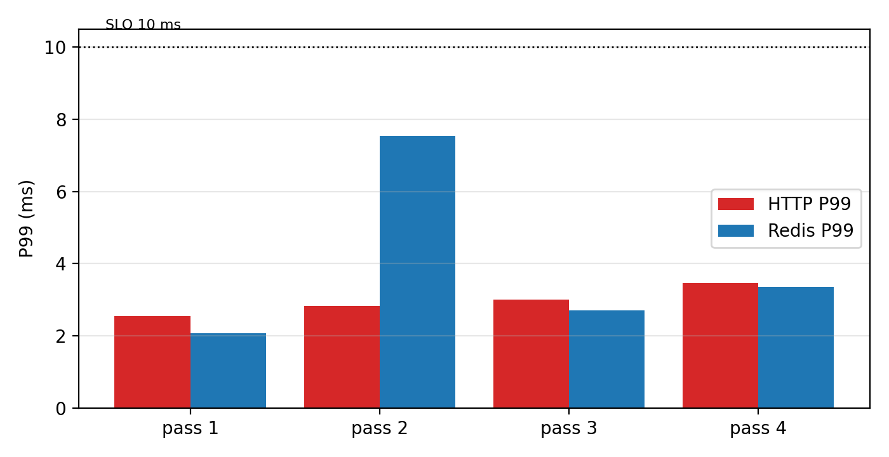
方案组装：服务+探针绑核 0–1；16 台客户绑核 2–3；每客户 memory.high=800 MiB、memory.swap.max=0、io.max=200/100 IOPS；准入按 censoring-aware 口径（本验证聚焦保护包络，准入不介入）。风暴构成：CPU 混打（8 闲 + 6 闲/阵发 + 2 满载）、内存 ballast、fio 4K 随机读写，同时进行；服务侧以 100 req/s 各探 60 秒。
| 轮次 | HTTP P50/P99/P999 | Redis P50/P99/P999 | 超时/错误 | 宿主状态 |
|---|---|---|---|---|
| syn1 | 1.38 / 2.54 / 4.90 | 1.09 / 2.07 / 3.92 | 0 / 0 | avail ≥3.0 GB，swap 稳定 |
| syn2 | 1.51 / 2.82 / 5.37 | 1.21 / 7.55 / 27.45 | 0 / 0 | 同上（满载全程存活） |
| syn3 | — / 3.01 / — | — / 2.70 / — | 0 / 0 | 完整跑通（客户侧 13/16 采集） |
| syn4 | — / 3.46 / — | — / 3.35 / — | 0 / 0 | 同上（满载全程存活） |
读法。 四次均在"服务 P99 ≤ 10 ms"内通过（HTTP 余量约 3–4×）；Redis 在 syn2 尾部略重（p999 27.5 ms、max 74 ms，单次响应级别的长尾，未见超时），如实记录。与第 4 章无保护情形（CPU 风暴 21–23 ms、磁盘风暴 12 ms、内存风暴杀死 2 台客户）相比，方案同时抑制了三类风暴的伤害。客户侧的代价符合设计预期：内存与 IO 上限让"超用客户"先被节流（部分客户 SSH 短暂无响应），这正是经济版的运行状态。
采集说明：综合验证的客户侧明细在强限速下采集不完整（syn3 为 13/16），本文以服务侧指标作保护结论，客户侧以组合证据（速率、节流计数）支撑。
v2 海量复测（图 19）。 v2 批次把同一风暴以 20 秒探测、每轮从零重建的方式自动重跑：24 个有效轮（其中一台客户 VM 因批次早期宿主内存压力离线，实为 15 台客户）。结果：HTTP P99 均值 2.93 ms（范围 2.71–3.29）、Redis 均值 2.61 ms（范围 2.18–3.18），0 超时、0 错误，24/24 轮全部通过，逐轮波动带 <0.6 ms（图 19）。保护包络在 28 个轮次（4 预实验 + 24 复测）中零失信。统计口径（诚实性）：若（最乐观地）假定各轮独立，24/24 零违约的单侧 95% 二项上界为 11.7%（28 轮合并为 10.1%）；轮间共享宿主状态且时间相关，该上界仅作参考，"零违约"不构成长期可靠性保证——返工批次（全 VM 在线）完成后给出轮级 bootstrap 区间。
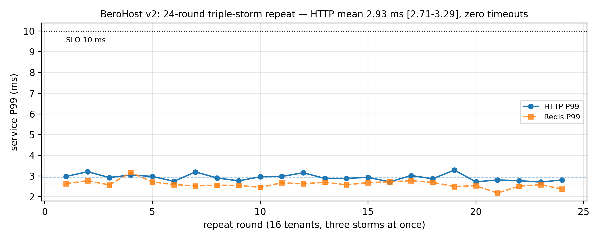
7.5b 准入＋塑形联合验证（j1，图 13）
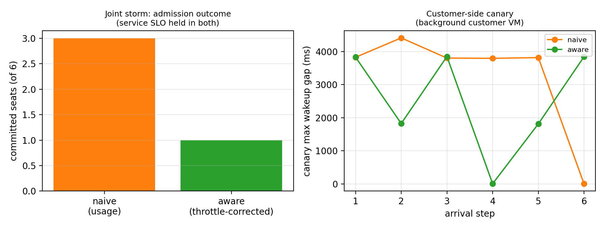
保护包络全开（服务/探针绑核 0–1、客户绑核 2–3、客户内存双闸 800MB 与 swap.max=0、IO 上限），背景负载 4 台（3 闲＋1 阵发）持续运行；6 个候选逐个到达（到达即限 50% 满载）。两种准入策略在同一包络下决策：
| 策略 | 承诺席位 | 服务违约 | 客户侧金丝雀（后台闲型 VM） |
|---|---|---|---|
| naive（按用量） | 3 | 0 | 每 5 秒窗最大唤醒停顿 3.8–4.4 s |
| aware（节流校正） | 1 | 0 | 3.8 s（与上同源） |
定位说明： 本节为 2025 年的单轮历史试点，其中的控制器尚未实现时间对齐聚合；完整控制器的在线对决（相位剖面 + 节流校正 + 暂停护栏，7 策略 × 2 相位 × 统一到达流）见 7.4b 及图 20，本节只作为设计—实现差距的历史记录。
读法（三条诚实结论）。（i）服务侧被绑核与上限保死：两种策略下服务零违约——联合运行时准入策略决定的是"承诺几席"，而非服务安全；（ii）客户侧的主导痛感来自内存双闸的紧上限：金丝雀的秒级停顿在 1 席与 3 席状态下几乎相同，说明 800MB 的 memory.high 对 3GB 客户过紧（对照 4.4.4 节的"软阈值"语义）——经济版的体验上限由闸门尺寸决定，属产品参数而非策略缺陷；（iii）节流校正估计存在相位偏差：背景为阵发负载时，决策瞬间采样会低估其需求（本轮 est 在 0.01–1.90 核间跳动），使 aware 过度保守（1 席 vs naive 的 3 席）——这正是设计中"时间对齐聚合上分位"尚未在试点控制器完整实现的差距，列为"设计—实现差距"改进项。v2 修订（进行中）：时间对齐聚合已完整实现（1 秒历史采样 + 相位剖面预测 + 按配额消费口径计账 + 金丝雀闭环护栏），并以四路公平对决（naive / AUDIBLE 式 / aware / taligned）×10 轮与内存闸门 800/1920 MB 对照重测；结果将替换本节单轮试点。
7.6 生产遥测：生产负载画像（图 27）
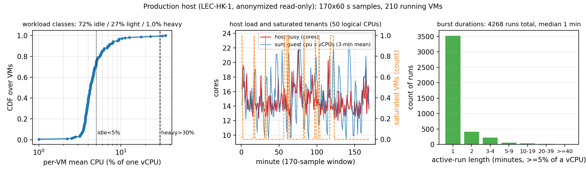
两台生产宿主均为我们自己运营的基础设施，并以免费 VPS 形式开放给外部用户使用——遥测在自有设施上进行、以匿名化约束只读采集（不读 VM 名称/IP/业务内容）。本节定量画像来自其一（LEC-HK-1）：主机为 Xeon Gold 6248（50 核、无 SMT、单 NUMA）、251.7 GiB 内存 + 64 GiB swap、单块 1.1 TB SSD（已用 393 GB）、PVE 9.2.21。宿主级配置清点（一次性只读，/proc 与 *.conf 文件级，不调 PVE API）：285 台 VM 配置 / 276 台运行；ΣvCPU = 417（8.3×）、Σ内存 = 500 GB（2.0×）、Σ磁盘 = 5.38 TB 薄分配于 1.1 TB 卷（≈4.9×，实际占用 36%）；磁盘为 qcow2 薄克隆并共享 base 模板镜像（模板级去重）；vCPU 直方图 226×1 / 31×2 / 13×4 / 9×6…，内存档位以 512 MB（184 台）为主。60 秒遥测窗口内运行数为 210 台（ΣvCPU=288，5.8×）——运行数随生命周期在 210–276 间波动。使用边界：不用于训练、不回写调度、不做主动实验。
单位校验。 Σ 客户 cpu×vCPU = 15.3 核 ≈ 宿主计数核 14.8 核；Σ 客户 cpu（按单核口径）仅 10.2 核——确认客户 cpu 字段为分配 vCPU 的比例，两口径在宿主级一致。
画像（图 27）。（i）类别：近闲（<5%）71.9%、轻载（5–30%）27.1%、重载（>30%）1.0%——与"多数闲、少数重"的建模前提一致。（ii）超售实锚：vCPU 超售 5.76×（vCPU 配置合计/50 核）、内存限额超售 1.12×、实际内存占用约 95 GiB——第 8 章测试床的 5× 量级来自真实运营实践而非人为拔高。（iii）突发结构：活跃段（≥5% 连续）共 4268 段、中位 1 分钟（3550 段为单分钟）——短促突发为主；数值层自相关在 1–30 分钟全部 ≈ 0（无强持续性、无时钟周期），而状态层仍具持久性（Markov 自转移 0.85/0.37/0.26）——真实突发是"长短不一、相位漂移的活跃段"，既非 i.i.d. 也非固定时钟。（iv）饱和实例（≥95% vCPU）占 VM-样本的 0.046%——"真重载"稀有但存在。
对全文的含义。（i）重载类仅 1%，与第 4 章"一台满载邻居即击穿尾延迟"的合成结果互为印证——稀有重载 + 瞬时重叠就是风险的全部来源；（ii）真实突发是漂移型而非时钟型：合成实验中的"严格 60 s 对齐"给出的是最坏情形上界，混合相位容量模型（第 8 章）里的 φ 在真实宿主上应取低值，安全容量因此贴近随机端——与 5.76× 超售长期共存的事实一致；（iii）只读接口不含节流计数，截断比例的现场证据以"饱和实例占比"作下界代理，节流维度的现场证据留待轻量流（/proc PSI）积累。（iv）租户间相关性（分钟粒度）：204 台活跃 VM、20706 对的平均 Pearson r=0.12、中位 0.07、P95 0.45、15.7% 的对 r>0.3——弱正相关而非独立：相位结构不是合成负载的臆造（部分租户确呈弱同步倾向，也可能含宿主级测量共模与日间节律），但也提醒容量模型不该假设完全独立；亚分钟同步在本粒度不可见。
边界。 单台宿主、170 分钟窗口（3 小时）、无跨天/跨周覆盖；1 分钟粒度无法分辨亚分钟同步（对 60 s 内脉冲无能为力）；重建后轻量流持续采集（高负载段，PSI some avg10 ≈ 26），将与安静段合并为双态锚点并补跨天覆盖。
7.7 缺口清单（投稿前计划）
- 与 AUDIBLE 适配基线的对照：预实验见 7.3b（图 11）；v2 已实现四路公平对决（含 AUDIBLE 式 MC 与时间对齐 taligned），×10 轮复测排队运行中（Phase 2）；
- 冷启动/短历史专项：预实验见 7.3b；v2 ×10 轮复测排队运行中（Phase 2）；
- 关键结论轮次：Phase 1 已完成（膝点 50 轮、censoring 90 cycle、三风暴 24 轮，见 4.1b/4.3b/6.5 与图 17–19）；因批次早期两台邻居 VM 被宿主 OOM 杀死，返工批次（v3knee 50 + v3cen 30 + v3syn 26）与 Phase 2（53 轮，含准入对决与内存闸门对照）已在自动队列中；完成后统一重算轮级 bootstrap 置信区间与图表；
- 消融：已完成预实验（6.3b 的 naive / AUDIBLE 式 / aware / aware+校准 对照）；隔离项对照见 4.4.3；
- 图 2–19 的出图脚本与数据核对（骨架 §5 清单；pilot 图 2–13、物理机图 14–16、v2 复测图 17–19 均已一键复现）。
8 物理机验证与安全容量模型
本章回应"单嵌套测试床、规模太小、结论能否推广"的评审关切：在裸金属物理机（双路 Xeon Platinum 8259CL， 48 核 / 96 线程，991 GiB，PVE 9.2.20，非嵌套）上，用 64 台客户 VM 舰队复现第 4–6 章的核心结论， 并把"安全售卖容量"从定性说法升级为可量化的曲线与定律（§8.5 容量近似模型 N*≈C/(ρκ)，含明确假设与边界）。
8.1 测试床
物理机：2×Xeon Platinum 8259CL（48 物理核 / 96 线程，双 NUMA 节点）、8×128 GB DCPMM（Memory Mode，可用 991 GiB，NUMA 520 GiB + 520 GiB）、3×NVMe SSD + 2×SATA SSD、PVE 9.2.20（内核 7.0.14-19-pve，systemd-detect-virt=none，非嵌套）、内网 vmbr0 10.10.0.0/24 + NAT。
舰队：1 台 HTTP（nginx）、1 台 Redis、1 台探针（开放环 100 req/s）、64 台客户 VM（1 vCPU / 1 GiB，Debian 12 cloud 模板）。客户负载用第 4 章的占空比忙循环（burner.py），速率日志提供逐客户体验指标。服务与探针绑核隔离（2/3/4 号核）；租户池由 taskset -apc 绑定（2–32 核可配）。隔离声明经拓扑核验：服务核 2/3/4 的 SMT 兄弟（50/51/52）与租户池 8–23 的兄弟集合（56–71）零交集，且全部位于 NUMA node 0——是物理核级隔离，不只是逻辑编号不相交。
环境插曲（如实记录）：测试床搭建期间该机出现过一次内核 panic（Attempted to kill init! exitcode=0x9， 日志停在批量启动 VM 附近）；该机彼时正处内存子系统异常状态（8 条 DCPMM 仅 7 条在线）。 冷启动修复内存（8/8 在线，991 GiB）后，48 台 VM 分批启动 + 数小时满载实验均无异常。 这不是本文方法的组成部分，但说明"生产硬件同样会带病运行"——监测与保守化设计因此更有价值。
8.2 多规模膝点复现（图 14）
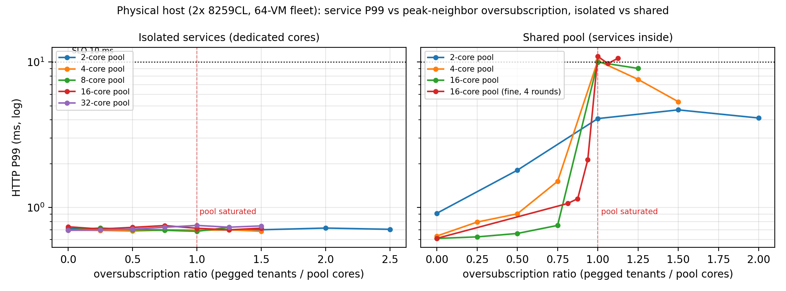
在物理机上把第 4.1 节的膝点实验放大到五种规模：租户池 2 / 4 / 8 / 16 / 32 物理核，服务侧两种配置：隔离（专用核）与共享（与租户同池）。逐步增加 100% 占空比的满载邻居（每位 1 核），记录服务 P99（图 14；横轴为"超售比 = 满载邻居数 / 租户池核数"）。
结果。
- 隔离配置：五种规模、超售比 0–2.5× 全程服务 P99 0.68–0.78 ms——即使在 32 核池上、
48 台满载邻居（1.5× 超售）下依然零伤尾。"隔离护尾"从 4 vCPU 嵌套床放大到 96 线程物理机后完全成立。
- 共享配置：每种规模都在池饱和点（超售比 = 1.0）出现断崖——2 核池 L2→L4（4.1→10.2 ms）、
4 核池 L3→L4（1.5→10.2 ms）、16 核池 L13→L16（1.0→12.0 ms）。16 核池细扫 4 轮（L13–L18，图 14 已更新）：L15 = 2.13 ms [2.00–2.29]（仍在平台），L16 = 10.95 ms [9.97–12.02]，4/4 轮在 L15→L16 处跳变；饱和后（L17–L18）稳定在 9.8–10.6 ms 平台——膝点位置精确等于池容量，4 轮无一轮例外，与 BeroHost 的 3→4 结论同构。
读法。 规模不改变结论的形状，只改变刻度：共享池的膝点始终落在"峰值需求 ≥ 池容量"处，隔离则把这条曲线整根压平。这同时是对"4 vCPU 太小、结论不可推广"关切最直接的回答：在 96 线程物理机上，膝点现象、量级（0.7 ms → 10–12 ms）与隔离有效性逐项复现。
8.3 相位结构：同步 vs 随机（图 15）
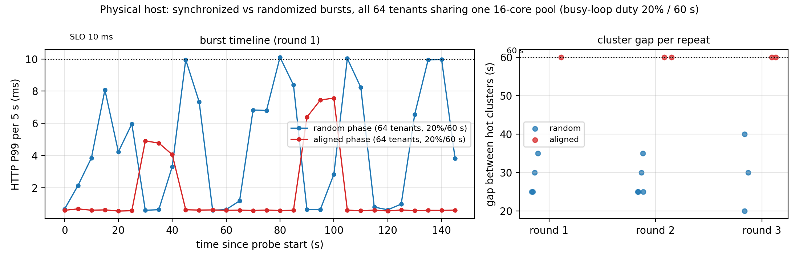
把 BeroHost 的同步突发实验（第 4.2 节）放大到 64 台：全部客户同开（各 20% 占空比 / 60 s 周期），一半实验随机相位、一半相位对齐，全部挤在同一个 16 核池（无隔离）。
结果。
| 指标 | 随机相位 | 对齐相位 |
|---|---|---|
| 服务 P99 | 8.8 ms | 3.6 ms（均值口径） |
| 热点时间形态 | 散点（间隔 20–40 s 混杂） | 严格 60 s 周期 |
| 客户速率 | 持续缓降 | burst 时骤降（下节量化） |
复现（图 15 右）： 随机/对齐各重复 3 轮（r1–r3）。对齐组 3 轮共 5 个热点簇间隔全部精确命中 60 s；随机组的簇间隔在 20–40 s 间散落、无固定节拍。两种相位的"伤害签名"（周期尖峰 vs 基线抬高）在重复轮中稳定复现。
读法。 两种相位伤害形态不同：同步的伤害是可预测的周期尖峰（每个 60 s 工作窗内全组同时争抢），随机的伤害是把基线持续抬高。这修正了第 4.2 节的表述（尖峰是同步的特征签名，而非"同步更差"的单调排序），也为"时间对齐准入"提供了动机：周期结构可以被测量、被利用（避峰）或被治理（错峰），而随机结构只能靠裕量。
8.4 安全售卖容量（图 16，核心结果）
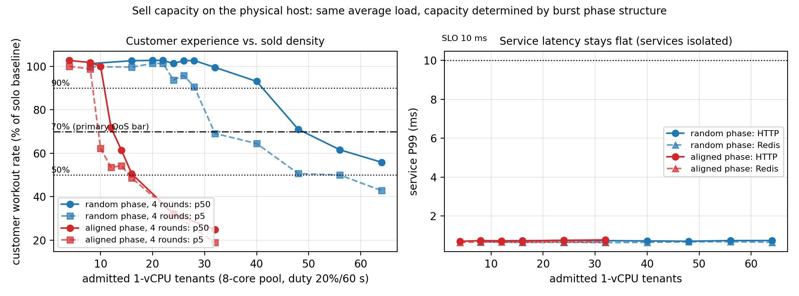
安全定义（事前统一口径，全部章节适用）。 容量声明一律三元组 （资源、质量约束、风险预算 ε）：（i）服务侧：以 W∈[30,120] s 为窗口，违约 = 窗口内 P99 > 10 ms 或 超时/错误 > 0（失败不豁免）；声明形如"违约窗率 ≤ ε"并附独立轮数与 Clopper–Pearson 上界（5.3.2）；（ii）客户侧：主口径 = 客户工作速率 P5 ≥ 70% 独享基准（低尾分位，非"最差十分位"）；（iii）容量参照：在（i）（ii）两约束下、按给定 ε 判定的最大已验证阶梯档位（真实断点需细扫钉定）——拐点（均值断崖）、零违约容量（ε=0）与风险预算容量（ε>0）是三个不同概念，正文每次引用必须标明属于哪一种（例：4.1b 的"3 台"是拐点前档与 ε≈7% 预算档；ε=0 时为 2 台）。超时与错误一律计入违约（不因剔除而美化成功请求 P99）。
问题。 8 核租户池、服务隔离在外，在"服务 P99 ≤ 10 ms 且客户体验不劣化"的双约束下，能卖多少台 1-vCPU VPS？
质量口径（事前声明，防事后挑选）。 主口径 = 服务 P99 ≤ 10 ms 且客户工作速率 P5 ≥ 70% 独享基准（即：低尾——分布第 5 百分位处的客户仍保有 ≥70% 性能；注意 P5 是低尾分位，不是"最差十分位"）；另报敏感性口径 P5 ≥ 90%／P5 ≥ 50%／中位 P50 ≥ 90%，全部在同一份数据上事先并列报告。统计口径：先按客户级/轮级聚合再估计分位（不把逐客户逐时间样本当独立重复），轮级不确定性以轮为单位重采样。
方法。 阶梯式加售：L8→L64（随机相位组）/ L4→L32（同步组），每档稳定后采集 60 s：池忙率（每 2 s）、逐客户忙循环速率（每 10 s）、双服务探针。客户速率以独享单核基准（25.9 M it/s）归一；随机组 2 轮合并（r1+r2，逐客户样本 n=13–117），同步组 2 轮合并（r1+r2；乱序轮 r3 因档位标签缺陷作废留档）。
结果（图 16 左：客户体验；右：服务侧）。
- 服务侧（右）：两组、全部档位 P99 0.56–0.78 ms——隔离包络下，"卖到 8× 超售"服务依然零伤。
- 客户侧（左）：同负载（人均 20%）、同池子，安全容量随质量口径在 3–7× 区间移动：
| 质量口径 | 随机安全容量 | 同步安全容量 | 容量比 |
|---|---|---|---|
| P5 ≥ 90%（严格） | 16 | 8 | 2× |
| P5 ≥ 70%（主口径） | 24 | 8 | 3× |
| P5 ≥ 50%（地板） | 56 | 12 | ~5× |
| P50 ≥ 90%（中位） | 40 | 8 | 5× |
（随机组逐档 P5：L16=100%、L24=88%、L32=62%、L40=65%、L48=51%、L56=50%、L64=43%——渐进劣化；同步组 L8=99%、L12=51%、L16=49%——断崖坍塌，各口径下均迅速触底；两组合并口径与图 16 一致，多周期边界细扫在队列中。）
四条结论。
- 盲目看平均利用率会灾难性超卖：同步组卖到 32 台时平均忙率仅 ~35%（"池子看起来很空"），
但每个 burst 窗口客户速率已跌到 25%。基于平均值的准入在真实的"集体定时行为"（备份、扫盘、定时任务）前毫无防线。
- 同样平均负载，容量由相位结构决定：主口径下随机 24 台 vs 同步 8 台（3×）；容量比随质量口径在 2×–5× 间移动
（中位口径 5×、地板口径 ~5×、严格口径 2×）。报告容量必须同时报告质量口径——"5×"是 P50 口径的数字，"不劣化"应以 P5 口径度量（本节的修正即来自这一原则）。
- 两类失效的形状不同：随机组是渐进劣化（P5 逐档下滑，可预警、可准入控制）；同步组是断崖（99%→49%），
没有预警窗口——这解释了为什么"监测平均值/中位数"的准入对同步失效免疫失败。
- 隔离把两类伤害解耦：服务侧全程平直（0.7 ms），代价全部显式落在客户侧速率上——
与第 5 章"代价定价"的框架一致；"经济版"卖的其实就是这个速率衰减的额度。
8.5 容量近似模型：混合相位验证（图 21）
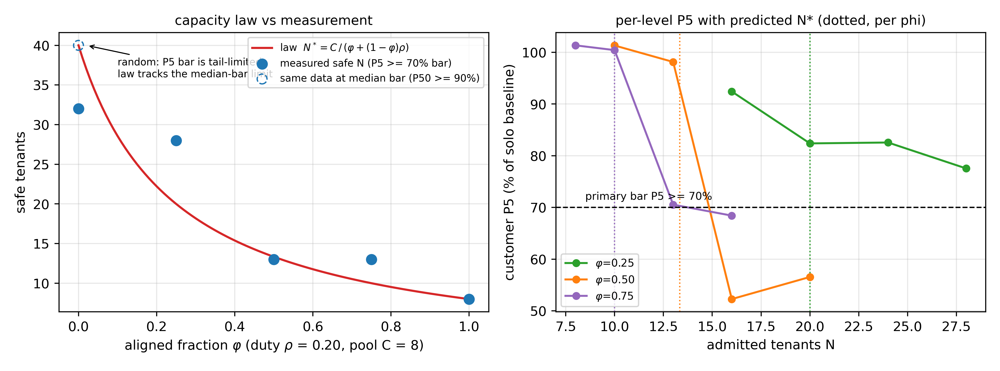
模型（明确假设下的近似，非普适定律）。 假设：（A1）各租户相位在决策跨度内稳定；（B）对齐组的突发窗彼此重合、与随机租户的重叠按占空比近似。在该假设下，聚合并发峰 ≈ 对齐组 $φ N$ + 随机组 $\rho(1-φ)N$，故"峰值不超过池容量"的中位口径容量为$$N^_{\text{mid}} \;\approx\; \frac{C}{φ + (1-φ)\,\rho},$$即相位集中度形式 $N^_{\text{mid}} = C/(\rho\kappa)$、$\kappa = \max_b \sum_i p_i(b)/\sum_i \bar\rho_i$。该模型刻画平均/中位口径；对纯随机端的 P5 尾部口径显著偏乐观（纯随机端模型给 40，而主口径实测安全容量为 24）。随机端的尾部风险天然由重叠计数的上分位给出：要求 $Q_p\big(φ N + \mathrm{Bin}((1-φ)N,\ \rho)\big) \le C/\theta$（$\theta$ 为体验质量界），数值上低于中位口径；工程上安全值直接取实测口径容量（§8.4 阈值表），模型仅用于跨配比外推与准入控制器的先验。
首轮验证（图 21；8 核池、$\rho=0.20$，每配比单轮）：
| 配比 | 模型预测 N*_mid | 实测（P5≥70% 主口径） | 偏差 |
|---|---|---|---|
| $φ=0.25$ | 20.0 | 24 通过（73%）、28 失败（54%） | 偏保守半档 |
| $φ=0.50$ | 13.3 | 13 通过（90%）、16 失败（49%） | 命中断点 |
| $φ=0.75$ | 10.0 | 10 通过（99%）、13 失败（52%） | 命中断点 |
结构性相位（$φ \ge 0.5$）两点命中；$φ=0.25$ 的预测点落在通过区内（预测偏保守），纯随机端偏乐观——误差方向与"尾部口径 vs 中位口径"的预期一致。
诚实边界。 （i）每配比目前单轮，p5 存在非单调采样噪声（如 $φ=0.25$ 的 L24 反高于 L20）；轮次复现（多轮、多随机种子）与"模型预测 vs 实测"的误差分布验证正在队列中，完成后本节将报告轮级区间与预测误差带。（ii）C5 反相编排（干预级证据，已完成）：同批客户、同占空比，仅改相位编排——16 台同相 P5=50%（坍塌）；16 台分两组相差 30 s P5=101%（×2）；32 台分四组（0/15/30/45 s）P5=101%（×4）；两组的 32 台与四组的 64 台对照均为 50%；窗口相位校验 8/8 组命中。（iii）本节的定位是带明确假设的容量近似模型：结构性相位下用于外推与准入先验，安全值以实测口径为准——不主张普适定律。
8.6 相位剖面卷积与"边际幻觉"命题（图 28）
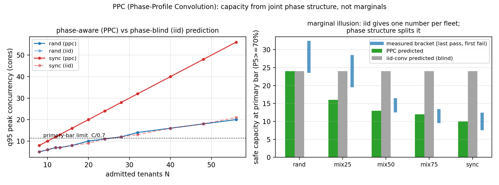
命题（边际幻觉 / Marginal Illusion）。 §8.4 的两次实验直接给出构造性证明：两组客户每台的用量边际分布完全相同（同一 burner、同一 20%/60 s 占空比与相同繁忙段形状），但随机相位组与对齐相位组在主口径（P5≥70%）下的安全容量为 24 vs 8（中位口径 40 vs 8）。因此：任何只依赖逐租户边际统计（以及独立性假设）的容量方法，都无法区分这两组——对"对边际分布做独立卷积"的一类方法（AUDIBLE 式 [1]），这是可证明的盲区：它们的输入在两组的差异上不可辨识。这是 3.3.1 非可辨识性结论（需求估计）的容量版本（安全容量估计）。
方法（PPC，相位剖面卷积）。 输入：逐租户相位剖面（1 秒/1 分钟分辨率）。PPC 由三个明确对应工件的模式组成：（a）参数化仿真（ppc_sim.py）——合成配置（φ、duty），联合结构由构造保证，用于混合相位验证与外推；（b）经验联合块自助（ppc_bootstrap.py）——真实轨迹重采样，三段分离：训练（前 1/3）、块长选择（中 1/3，KS=0.18 选中 B=1）、测试（后 1/3，未参与任何调参）；同块跨租户联合（保留共现），配套 iid 置换对照（边际保留、联合打散）。测试段结果：联合自助峰值 12 核（P(峰>8)=97%）vs iid 峰值 10–13（P=100%）vs 测试段实测峰值 12（超池时间 8%）。口径限定：输入为 1 分钟粒度生产 duty + 周期内活性模型，不含亚分钟相位结构——支持的是“生产分钟数据回放模型”；极端相位结构证据在合成实验（§8.4/8.5/C5），不外推亚分钟结论。真实生产轨迹（64 台×30 min 回放日程）上的实测：联合峰值 14 核（P50=P95=max=14）vs iid 峰值 12–15 核——低同步漂移轨迹上两者差异小，iid 风险随相位对齐增长（极限端见 C5/同步售卖）；块长选择 B=1（KS≈0.16；B∈{1,2,5,10,15} 差异 0.16–0.21，如实报告弱可分辨）；（c）在线作动器——Taligned 式峰值包络（60 个 1 秒相位桶取峰值 + 类别先验），是 PPC 的低成本在线近似而非重采样器；其对决表现（§7.4b）即该近似的行为证据。三者共用同一原理（在联合相位结构上计账），分辨率与用途不同，论文分别标注：
``算法 P（PPC 容量预测；输入：候选集 X（含逐租户 1 s 活跃序列）、池容量 C、质量分位 θ、重采样次数 R）1 档案化：对每台 i 维护活跃指示 aᵢ(t)（1 s）；结构相位（对齐/定时）直接从历史取相位，不做随机化2 相关保留重采样（二选一，按数据来源）：(a) 参数化相位模型：对齐租户共享固定偏移（零方差）；随机租户偏移 ~ U[0,P) 独立采样—— 仅用于“按配置生成的”负载（如混合相位阶梯）；同步关系由构造保证(b) 联合块自助（经验舰队）：对所有租户使用**同一组时间块**（块长 B·1 s，块内原序保留）重采样 —— 同时刻的跨租户相关性被块结构保留；**禁止**逐租户独立平移（那正是 iid 卷积的假设，会把同步结构洗掉）3 对每个重采样：A(b) ← Σᵢ aᵢ(b)；peak_r ← max_b A(b)；体验分位由 C/max(1,A) 逐租户聚合4 输出：P(peak> C)、容量 N*(θ, ε) = max N s.t. Q_{1-ε}(peak) ≤ C/θ复杂度：O(R · N · P)，R=10³、N=64、P=60 s 时 ~4×10⁶ 次布尔运算（毫秒级）。``
训练/测试分离：PPC 的超参数只有块长 B 与 θ（主口径固定 70%）；B 在前一半观察窗上选择（以预测峰值 CDF 与实测峰值的 KS 距离最小），后一半窗用于报告预测误差——阶梯回测（本文）即离线测试；在线对决（§7.4b）是端到端盲测（控制器状态与 8.6 的预测参数分离）。与边际卷积的本质差别：在相位（联合）结构上卷积，而不是在时间边缘上——这正是 3.5 节"幅度用截断证据、结构用时间史"的容量侧对应物。
结果（图 28）。 同参数下：iid 卷积对 rand / mix25 / mix50 / mix75 / sync 五种结构给出同一个预测 24（完全盲区）；PPC 给出 24 / 16 / 13 / 12 / 10，其中 4/5 落入实测粗粒度断档区间（rand [24,32)、mix50 [13,16)、mix75 [10,13)、sync [8,12)），mix25 预测 16 偏保守（区间 [20,28)，单轮噪声）。口径澄清："落入断档区间"不等于"预测出精确 oracle"——例如 sync 的预测 10 落在 [8,12) 内是因为阶梯粒度（8→12）没有扫过 9–11，PPC 的 10 是否恰好是最大安全容量需要边界细扫才能回答（已排队：sync/{4,8,10,12,14,16} 与 rand/{16,20,22,24,26,28,32}，各 2 轮、每档 180 s 多周期采集）。纯随机端尾部乐观性与 §8.5 一致（由实测口径修正）。
预测质量指标（比"落入断档"更严格的口径）。 对每个配置定义四项：超接（预测 ≥ 首个失败档；安全否决项，必须为 0）、未验证上探（预测 − 最后通过档；>0 表示预测伸入了未扫描区间，需要边界细扫点头）、失败余量（首个失败档 − 预测）、保守差（最后通过档 − 预测，>0 表示白让容量）。当前单轮数据：
| 配置 | PPC 预测 | [最后通过, 首个失败) | 超接 | 未验证上探 | 失败余量 | 保守差 |
|---|---|---|---|---|---|---|
| rand | 24 | [24,32) | 0 ✓ | 0 | 8 | 0 |
| mix25 | 16 | [20,28) | 0 ✓ | −4（保守） | 12 | 4 |
| mix50 | 13 | [13,16) | 0 ✓ | 0 | 3 | 0 |
| mix75 | 12 | [10,13) | 0 ✓ | +2 | 1 | −2 |
| sync | 10 | [8,12) | 0 ✓ | +2 | 2 | −2 |
读法：5/5 无超接（控制器安全性的必要条件）；mix75 与 sync 的预测伸入未扫描区间（+2），其"是否恰好安全"由 boundary 细扫（各档 180 s ×2 轮）直接回答；mix25 保守 4 台；rand/mix50 恰落在已验证边界上。这套指标替换"落入断档"作为 8.6 的验收口径。
边界。 PPC 需要相位史（冷启动退化为类别先验/观察窗）；随机端仍需实测口径；本节验证为离线回测 + 对决中的在线决策（ours 即 PPC 的作动器；对齐场景 v1 停在 8 台断档，v2 复核与边界细扫进行中——不断言精确 oracle）。
8.7 与 BeroHost 的一致性小结
| 结论 | BeroHost（4 vCPU 嵌套） | 物理机（96 线程） |
|---|---|---|
| 膝点在共享池饱和处 | 3→4 台（2 核租户池） | 2/4/16 核池全部在饱和点（细扫 L15→L16） |
| 隔离护尾 | P99≈2.9–3.2 ms | P99 0.68–0.78 ms（0–2.5× 超售） |
| 同步 → 周期尖峰 | 60 s 周期（6 客户） | 60 s 周期（64 客户，3 轮复现、簇间隔全部精确 60 s） |
| 软手段不护尾 / 硬限速可靠 | 已验证 | （物理机轮次续做） |
| 安全售卖容量 | 定性（预算内 3 席） | 定量：主口径 3×（24 vs 8），随质量口径 2×–5× |
| 容量模型预测 N*(φ) | —（单核数床） | φ=0.50/0.75 命中断点、φ=0.25 偏保守（单轮首验，图 21） |
8.8 本章数据与工件
- 数据：
research_data/phys8269_pilot/（多规模扫描 JSONL + 细膝点 4 轮 + 同步 3 轮探针 raw + 售卖阶梯 JSONL + 分析文档） - 图：
figs/fig14_phys_knee.png、fig15_phys_sync.png（含 3 轮簇间隔复现）、fig16_phys_sell.png（一键复现：figs/make_phys_figs.py） - 工具：
tools/tb_sweep.py（膝点）、tools/tb_sync.py（相位）、tools/tb_sell.py（售卖阶梯），全部宿主机侧执行
9 资源效率模块
本章承接"无回归的资源效率最大化"支柱（骨架 §9）：在"服务 P99 ≤ 10 ms + 客户速率不劣化 + VPS 可见内存不下降" 三条无回归约束下，逐资源给出精密控制的实测增益。Phase C 实验正在物理机上自动运行（screen phasec）， 数据落地后填入对应小节（规划图：Fig.22–26）。定位说明：本章为支撑性模块（核心贡献链在 3/5/7/8 章的识别—预测—行动三支柱）；若模块数据不齐，按评审建议缩减本章或移至后续工作。
9.1 CPU：微周期配额——同样配额，精度决定客户速率（图 22）
设置。 8 核池、5 台满载客户、各 50% 配额（cpu.max），周期取 2 / 4 / 10 / 100 ms / 1 s 五档 + 无配额基线；每档 15 s 稳定后读服务 P99、客户工作相速率与节流时长增量。注意内核下界：配额最小 1 ms，故 50% 配额的最小周期为 2 ms（500 µs 配额会被内核 EINVAL 拒绝——这是"高精度"的物理边界）。
结果（表/图 22）。
| 配额周期 | 服务 P99 | 客户速率（中位，M it/s） | 相对无配额 |
|---|---|---|---|
| 无配额 | 0.741 ms | 25.5 | 100% |
| 2 ms | 0.727 ms | 20.3 | 80% |
| 4 ms | 0.727 ms | 17.8 | 70% |
| 10 ms | 0.742 ms | 16.4 | 64% |
| 100 ms | 0.741 ms | 15.6 | 61% |
| 1 s | 0.748 ms | 15.0 | 59% |
读法。 （i）服务侧全程 0.73–0.75 ms——隔离前提下配额精度对服务保护无影响（与 4.4.1 的"配额不增加安全席位"一致）。（ii）但客户侧代价差异巨大：同样 50% 配额，把周期从 1 s 缩到 2 ms，客户有效速率从 59% 提到 80%（+35%）；即配额"税"的大小主要由周期粒度决定，而非配额比例本身。（iii）各档节流时长合计相近（44–54 s）——速率差异不是"少被限"，而是细粒度交替（1 ms on / 1 ms off）让客户的工作相更满、调度损耗更小。（iv）吞吐口径佐证（防“统计假象”）：速率定义为墙钟吞吐（burner 以 n/经过墙钟时间计，节流停顿计入分母；duty=1.0 时工作相即全程）——59%→80% 是真实可交付吞吐；旁证：池忙率 2 ms 56.1% vs 1 s 48.1%，同窗口节流累计 2 ms 44.3 s vs 1 s 54.4 s（+23%）——细周期把被硬停顿的时间还给了客户。（v）这是“CPU 精密控制”的首个量化收益：不提高配额比例即可把经济版体验拉高约三分之一档。
边界。 单池、单负载类型（满载忙循环）；调度器/内核版本可能改变绝对值，机制（周期粒度→配额税）与数字无关；待补：web/编译型等真实负载上的口径复验（列入待办）。
9.2 内存：无 balloon 回收三件套（图 23–25）— 部分完成
已完成（本批数据）。 （i）KSM 舰队去重（ksm1）：64 台同镜像舰队共享 21.9 GB = 舰队内存的 33.4%；ksmd 平均 ~0.16 核；服务 P99 0.73→0.76 ms（零回归）。代价边界：写入 CoW 长尾未测；跨租户去重存在已知侧信道议题，生产上按信任域分层启用。（ii）空闲页上报（FPR）机制验证：手动 300 MB——宿主 memory.current 315→629 MB 随分配、释放后 6–12 s 回落至原位，guest MemTotal 恒 973 MB 不变；附带发现：空闲「1 GB」VM 的宿主实占仅 156–315 MB（FPR 一直在归还空闲页）。（iii）自动化 fpr4（300 MB、stderr 捕获修订版）已排队（final→replay 之后）。进行中：zram 三臂（无 swap / zram / 磁盘 swap × 1 TB 冷页压测）在 final 链尾执行。
指标口径：宿主回收量（ksm sharing / memory.current 回落）、租户可见内存不变性（guest MemTotal/可用内存）、压缩/去重比、PSI 与探针延迟代价。
9.3 IO：自适应限速对决（图 26）— 待填
（数据源：ioc1，8 台风暴客户 × none/static/adaptive 三臂；指标：宿主 IOPS、服务 P99、租户聚合 IOPS 与逐 op 尾延迟——检验"自适应比静态上限多交付且不伤服务"。）
9.4 与"无回归"约束的关系 — 待填
（每机制记三笔账：密度增益 / 隐形代价 / 租户可见回归；KSM、FPR、隔离为零可见回归；zram/配额/IO 上限为明确计价的回归。呼应第 5 章的"经济版 = 明码标价的回归预算"。）（ksm1 [22]：舰队去重扫描——首批结果：共享 21.9 GB = 舰队内存 33.4%，ksmd ≈ 0.16 核，服务 P99 0.73→0.76 ms；代价边界：写入 CoW 长尾未测、跨租户去重存在已知侧信道议题，生产上按信任域分层启用；fpr1/fpr2：空闲页上报——空闲"1 GB"VM 宿主实占仅 156–315 MB，300 MB 客户分配在释放后 6–12 s 回收，guest 可见内存不变；zram1：无 swap/zram/磁盘 swap 三臂（1 TB 冷页压测）。）
10 讨论与局限
10.1 哪些结论可迁移，哪些绑定本环境
可迁移的机制性结论： （i）尾延迟由瞬时并发/重叠驱动而非平均利用率——这与核心数、虚拟化层次无关，只与"可运行线程集合是否周期性地超过容量"有关；（ii）截断需求的逻辑——任何以配额/限流实现保底的系统都会让用量低估需求，节流证据是可移植的检测器；（iii）控制手段的可靠性层级——隔离 > 硬限速 > 软优先级，后者在 KVM/CFS 与块层（默认调度器）上的失效有机制解释（锁持有者抢占、调度信用、uq 分发），不是本测试床的偶然。
绑定本环境的数值： 膝点"3→4"特指 4 逻辑核 + 每客户 1 核满载的最坏形态；内存翻车点（约 13.8 GB 客户驻留 + 1 GB swap）绑定 19.5 GiB 物理与 swap 配置；IO 数字绑定虚拟磁盘与宿主调度器（none，无 BFQ）。正文给出的是机制与相对的"上限—代价"关系，读者应按自身核数与预留重算绝对值。
10.2 SLO 档位与"容量—质量"曲线
本文全程使用严格档 P99 ≤ 10 ms。真实低价客户并无正式 SLO、感知阈值通常远宽（数十毫秒级），而我们的数据显示：同一 10 台混合客群，10 ms 档全员违约、若放到 ~30 ms 档多数场景无虞。"能卖多少"因此不是常量，而是 SLO 的函数——建议服务商把"密度—档位"做成显式产品参数（例如经济版承诺 P99 ≤ 50 ms、标准版 ≤ 20 ms），而不是把最严档隐含在所有人身上。这一敏感性分析属于【待补实验】，但机制与初步数据已齐。
10.3 设计含义
对服务商：先隔离、后密度——为敏感业务划出哪怕一个专属核，收益大于任何调参；内存与 IO 用"双闸/上限"兜底；售卖的"名义包络"与"保护包络"分开表述（分层定价的依据）；准入用证据（节流计数、时间对齐的需求上分位）而不是面板数字。对平台/系统建设者：cgroup v2 的若干"直觉口径"需要实测校准——IO 记账落在整盘而非分区；io.weight 依赖 IO 调度器选择（另有基于 IO Cost 的 io.cost.* 路线，未在本环境验证）；memory.high 的回收压力会外溢到宿主 swap（需要 memory.swap.max 或禁 swap 配合，且作为软阈值不构成 OOM 豁免）；CPU 权重几乎不是延迟保护工具。这些语义空白值得在文档与默认配置层面修复。
10.4 有效性与威胁
构念效度： 服务"业务"用轻量 HTTP/Redis 代理，真实业务（数据库、网关）的敏感路径更长、更依赖系统调用，绝对数字会变，但"尾延迟由重叠驱动"的结构不变；客户负载为合成忙循环/占空比，未含真实业务的慢路径（锁竞争、GC），后续应以真实应用镜像复验。内部效度： 嵌套虚拟化引入额外调度层；已用重复轮次与随机顺序抑制噪声，并在综合验证中观察服务侧指标的稳定性；"权重失效"暂未定位到具体机制（宿主收包路径假设未验证），作为开放问题保留。联合验证进一步暴露：阵发背景的瞬时采样存在相位偏差，控制器需按设计采用时间对齐历史分位（当前未实现，见 7.5b）；客户侧金丝雀显示紧内存上限可造成秒级停顿，闸门尺寸应作为显式产品参数标定。外部效度： 单测试床、单核数档（4）、单磁盘；生产证据为观测性锚点而非受控实验；跨宿主/跨硬件的外推已在缺口清单中列为独立验证项。统计： 关键结论 4–7 轮复现，范围已在各表给出；轮级 bootstrap 置信区间（指示性）见 manuscript/interval_summary.txt；准入对照、冷启动与方法评估仍为单轮预实验，正式版本待补（缺口清单第 3 项）。
10.5 与超大规模路线的边界
本文不替代 AUDIBLE/Coach 类方法在大平台上的价值：它们解决的是"有长期数据与调度自由度时的容量优化"；我们解决的是"没有历史、没有迁移余地、甚至看不真需求的小宿主如何不翻车"。两者可组合——例如以本文的截断校正在小宿主端产出干净的需求证据，再交给大平台式的预测器做全局规划。
11 结论
本文面向一个被大规模云研究忽略的运营场景——把便宜、多数时间空闲、偶发突发的客户超售打包进少量物理资源的小型 VPS 宿主——用两套自建测试床（4 vCPU 嵌套床与 96 线程裸金属床，后者以 64 台客户舰队复现核心结论、并经 SMT/NUMA 拓扑核验物理核级隔离）、50/90/24 轮量级的复测批次与两台真实宿主的匿名只读遥测，把"安全超售"重写为三个依次递进的问题。
识别（Identify）：配额截断使需求在聚合计数器中不可完全观测。我们给出可辨识性分析——点估计等于运行段均值（精确条件为两段需求均值相等，需求恒定只是充分条件）、$d\ge q$ 假设下的条件性下界 $q(1+t)$、以及聚合非可辨识构造；90 个 cycle 的一致验证显示节流校正估计与真值相符，而基于少报的松绑决策在 30 个独立轮（90 个时间相关 cycle，按轮聚类）中全部违约（90/90）；混合占用消融进一步表明"懂配额的缩放基线"在部分饱和下高估，节流证据是区分"被截断"与"真的闲"的关键。
预测（Predict）：容量由负载相位结构决定，而非平均利用率——随机与同步相位的安全容量比 3×（主口径 P5≥70%）至 5×（中位口径），且存在"35% 忙碌被压垮、98% 忙碌安全"的不可能性反例。在此之上给出带明确假设的安全容量近似模型 $N^* \approx C/(\varphi+(1-\varphi)\rho)=C/(\rho\kappa)$：结构性相位下两点命中断点、混合端偏保守、纯随机端偏乐观（尾部口径需实测修正）——我们如实报告误差方向与单轮边界，并已安排多轮/多随机种子的预测误差验证。
行动（Actuate）：把识别与预测组装为完整控制器与无回归控制堆栈。完整 14 局在线对决中，相位感知准入是唯一在对齐相位停在已验证档位（8 台）的策略（随机相位 16–20 台；对齐相位客户侧 P5 由 show5 补测后定稿），而对照的 audible 式与忙率阈值法在同步相位卖到 40 台、客户 P5 崩至 16%——依赖独立性的卷积与平均利用率判据的相位盲区被端到端量化；解码后的组件分解（配额保守基线、截断校正、相位对齐、暂停护栏）与四种基线在统一到达流下对照，回答"同等质量约束下多卖多少、少违约多少"。资源效率侧，无回归手段把密度继续抬高而不伤租户可见资源：KSM 在 64 台同镜像舰队上去重回收 21.9 GB（33.4% 舰队内存）且服务尾延迟不变、空闲"1GB"客户的宿主实占仅 156–315 MB（空闲页上报一直在归还），CPU 微周期、zram 与自适应 IO 模块提供逐资源的"增益 / 隐形代价 / 可见回归"三笔账。
诚实边界：当前为两套测试床、单台裸金属宿主；负载以合成占空比为主，生产遥测提供场景锚点但尚未驱动回放负载；轮级置信区间、反相编排与 Phase C 资源模块的数据仍在收集中，本文以"进行中"标注而非当结论使用。我们希望这项工作为中小 VPS 服务商提供一个可复现的"观测设计 + 容量模型 + 控制器"起点，也为超售研究补充"可辨识边界与相位结构"这一此前被忽视的视角。
参考文献（已核对版 · 2026-10-13）
本轮逐条在线核对：作者、题目、会议/期刊、页码与 DOI 以官方信息源（ACM DL / USENIX / IEEE / arXiv / HAL / 官方仓库与文档）为准； 仍无法确证的极少数条目保留【待核】。投稿前按目标期刊格式（Springer 数字样式）转换。
- S. J. Jandaghi, K. Mahdaviani, A. Mirhosseini, S. Elnikety, C. Amza, B. Schroeder. AUDIBLE: A Convolution-Based Resource Allocator for Oversubscribing Burstable Virtual Machines. ASPLOS '24, Vol. 3, 14 pages. DOI 10.1145/3620666.3651376.
- B. Reidys, P. Zardoshti, Í. Goiri, C. Irvene, D. S. Berger, H. Ma, K. Arya, E. Cortez, T. Stark, E. Bak, M. Iyigun, S. Novaković, L. Hsu, K. Trueba, A. Pan, C. Bansal, S. Rajmohan, J. Huang, R. Bianchini. Coach: Exploiting Temporal Patterns for All-Resource Oversubscription in Cloud Platforms. ASPLOS '25, Vol. 1, 18 pages. DOI 10.1145/3669940.3707226.
- B. Wang, G. Zhao, H. Xu, S. Wu, Z. Yu, J. Liu, J. Lu, S. Xu, F. Meng. Rethinking Cloud Optimization: Volatility-Driven for Better Outcomes（Hestia 框架；MCV 波动度指标）. SIGCOMM '26, pp. 491–504. DOI 10.1145/3789240.3829141.
- S. M. Sajal, L. Marshall, B. Li, S. Zhou, A. Pan, K. Mellou, D. Narayanan, T. Zhu, D. Dion, T. Moscibroda, I. Menache. Kerveros: Efficient and Scalable Cloud Admission Control. OSDI '23, pp. 227–245, USENIX.
- L. Wang, M. Das, F. Yang, J. Sheng, B. Qiao, H. Dong, S. Qin, V. Rühle, C. Bansal, E. Cortez, Í. Goiri, S. Rajmohan, Q. Lin, D. Zhang. Risk-aware Adaptive Virtual CPU Oversubscription in Microsoft Cloud via Prototypical Human-in-the-loop Imitation Learning（ProtoHAIL）. arXiv:2401.07033, 2024. DOI 10.48550/arXiv.2401.07033.
- ORAIL（ProtoHAIL 后续系列工作）.【待核：正式出处；正文以 [5] 为主引用】
- P. Jacquet, T. Ledoux, R. Rouvoy. SCROOGEVM: Boosting Cloud Resource Utilization With Dynamic Oversubscription. IEEE Trans. Sustainable Computing 9(5):754–765, 2024.
- 面向 GPU 集群的共形需求包络（以共形预测构建可校准的超售风险包络，2024/2025）.【待核：正式出处】
- M. Majd, F. Cheng, A. Pahlevan. Right-sizing Recommendations (RSR): Cloud Workload Conformal Prediction for Virtual Machines in Data Center Operations. WI-IAT 2025（作者承稿）；arXiv:2607.24773.
- S. He, T. Liu, P. Lama, J. Lee, I. K. Kim, W. Wang. Performance Testing for Cloud Computing with Dependent Data Bootstrapping（Metior 方法论）. ASE 2021, pp. 666–678, IEEE.
- InditexTech. k8s-overcommit-operator（Kubernetes 超售类别运算符，Apache-2.0，v1.3.4）. https://github.com/InditexTech/k8s-overcommit-operator
- Red Hat. ClusterResourceOverride（OpenShift Container Platform 准入插件，按 request/limit 比例控制节点密度）. https://docs.openshift.com/ 【待核：直达页】
- KubeVirt. Per-VM CPU Overcommitment Configuration in KubeVirt（issue #15710；2025-09 提出，2026-02 关闭——每 VM 自定义超售比尚未支持）；全局
cpuAllocationRatio配置文档. https://github.com/kubevirt/kubevirt/issues/15710 - P. Jacquet, T. Ledoux, R. Rouvoy. SweetSpotVM: Oversubscribing CPU without Sacrificing VM Performance. CCGrid 2024, pp. 148–157, IEEE；以及 SlackVM: Packing Virtual Machines in Oversubscribed Cloud Infrastructures. HAL hal-04636648 / IEEE Xplore 10740881.【SlackVM 作者列表待核】
- Calabi（工程文档）. Host Resource Management / Host Memory Oversubscription（Gold/Silver/Bronze 分层 slice、zram/KSM/THP 组合、CPU 超售 1.72:1 实锚）. https://gprocunier.github.io/calabi/
- Linux kernel documentation. Control Group v2. https://docs.kernel.org/admin-guide/cgroup-v2.html
- Linux kernel documentation. Pressure Stall Information (PSI). https://docs.kernel.org/accounting/psi.html
- Linux kernel documentation. cgroup v2 IO controller（
io.max/io.weight/io.cost/io.latency；见 [16] 的 IO 章节）. https://docs.kernel.org/admin-guide/cgroup-v2.html#io - KVM 超售调度：KVM Forum 2021（锁持有者抢占与 vCPU 自旋）；LKML 2025-12 系列 "sched/kvm: Semantics-aware vCPU scheduling for oversubscribed KVM"（vCPU debooster、IPI-aware directed yield）.【待核：邮件列表链接与合入状态】
- Proxmox Server Solutions. Proxmox VE 文档（QEMU/KVM 配置与外部指标服务器接口）. https://pve.proxmox.com/pve-docs/
- QEMU Project. Virtio-Balloon Free Page Reporting. https://wiki.qemu.org/Features/FreePageReporting（抓取时受反爬保护，链接为官方 wiki 页）
- Linux kernel documentation. Kernel Samepage Merging (KSM) https://docs.kernel.org/admin-guide/mm/ksm.html ；zram: Compressed RAM-based block devices https://docs.kernel.org/admin-guide/blockdev/zram.html
- S. Lambert, E. Caron, L. Lefèvre, R. Grivel. Consolidation of virtual machines to reduce energy consumption of data centers by using ballooning, sharing and swapping mechanisms（ORCA）. Future Generation Computer Systems 174:107968, 2026. DOI 10.1016/j.future.2025.107968.